芯片数据分析¶
一. 基因芯片的基本原理¶
基因芯片（genechip）（又称DNA芯片、生物芯片）的原型是80年代中期提出的。基因芯片的测序原理是杂交测序方法，即通过与一组已知序列的核酸探针杂交进行核酸序列测定的方法，在一块基片表面固定了序列已知的靶核苷酸的探针。当溶液中带有荧光标记的核酸序列TATGCAATCTAG，与基因芯片上对应位置的核酸探针产生互补匹配时，通过确定荧光强度最强的探针位置，获得一组序列完全互补的探针序列。据此可重组出靶核酸的序列。
1. Affymetrix生物芯片介绍¶
美国Affymetrix公司是目前全球基因芯片行业的领头羊，以其专利的寡聚核苷酸原位光刻合成技术，年产各类寡聚核苷酸基因芯片达到几十万张，占据了表达谱基因芯片科研市场的一半以上，经过了将近十年的研究和开发，已经在国际上赢得了很高的盛誉，同时也成为为数极少的已经盈利的生物芯片公司。Affymetrix公司的基因芯片为寡核苷酸芯片（Oligo芯片），这种类型的芯片具有极高的特异性和灵敏度，重复性好，假阳性率非常低，是目前世界上最先进的基因芯片。Affymetrix所利用的原位光刻专利技术可使一张芯片上合成多达500,000 个寡核苷酸。该系统可以分析样品中DNA或者RNA序列的相对含量。
Affymetrix公司率先开发的寡聚核苷酸原位光刻专利技术，是生产高密度寡核苷酸基因芯片的核心关键技术。采用的技术原理是在合成碱基单体的5＇羟基末端连上一个光敏保护基。首先使支持物羟基化，并用光敏保护基团将其保护起来。每次选取适当的蔽光膜（mask）使需要聚合的部位透光，其它部位不透光。这样，光通过蔽光膜照射到支持物上，受光部位的羟基脱保护而活化。因为合成所用的单体分子一端按传统固相合成方法活化，另一端受光敏保护基的保护，所以发生偶联的部位反应后仍旧带有光敏保护基团。因此，每次通过控制蔽光膜的图案（透光与不透光）决定哪些区域应被活化，以及所用单体的种类和反应次序就可以实现在待定位点合成大量预定序列寡聚体的目的。 使用多种蔽光膜能以更少的合成步骤生产出高密度的阵列，在合成循环中探针数目呈指数增长。某一含N个核苷酸的寡聚核苷酸，通过4×N个化学步骤能合成出4N个可能结构。例如：一段8个碱基的寡核苷酸有65，536种排列的可能，通过32个化学步骤，8个小时就能合成65，536个探针。其基本原理如图所示：
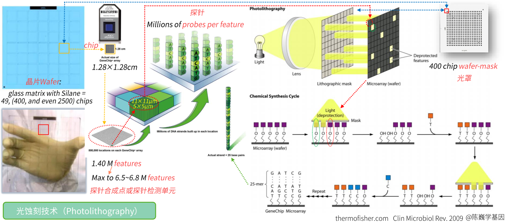
视频讲解：https://v.qq.com/x/page/j0173fqkgbb.html
昂飞的表达谱芯片，分成传统的 「In Vitro Transcription」 芯片，简称 IVT 芯片和新一代的 「Whole Transcriptome」 芯片，简称 WT 芯片。
IVT 芯片用 Oligo dT 引物和 T7 逆转录酶来得到 cDNA 链，所以，它得到的 cDNA 主要是靠近 mRNA 3'位末端的 cDNA。
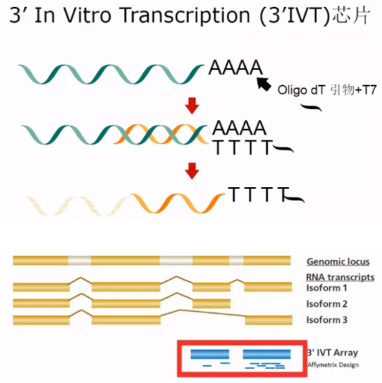
WT 芯片用随机引物和 T7 逆转录酶来得到 cDNA 链，所以其 cDNA 会覆盖转录本上更多区域。
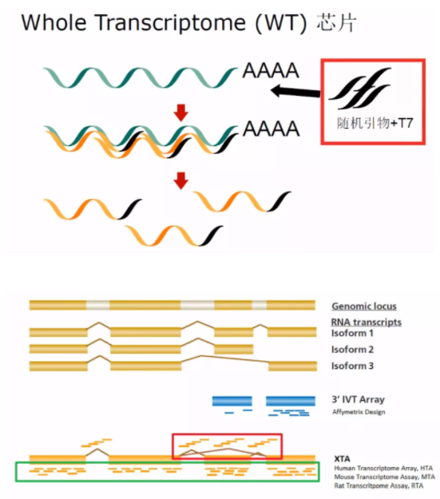
WT 芯片的好处：
- 可以覆盖转录本上更多的区域，实验结果的代表性就会更强（如图绿框）。
- 可以针对因为差异剪接所形成的不同转录本分别设计探针，方便得到不同转录本的表达量变化情况（如图红框）。
- 可以检测到 lncRNA。
比较著名的 WT 芯片有 HTA 2.0、Exon 1.0、Gene 2.0/2.1 等。
参考文章：https://mp.weixin.qq.com/s/OURXVzaQF05ykQEWpXsLGw
2. illumina的原理¶
illumina 方案的测序芯片称为「Infinium」（曾用名「Bead Array」），顾名思义由玻璃基片和微珠组成。
玻璃基片形状大小与普通载玻片相近，其作用主要是为了给测序微珠提供容器。
基片内表面，通过光蚀刻的方法，做出许多排列整齐的微米级小孔，作为容纳测序微珠的空间。两者大小恰好匹配，一个小孔正好能容纳一个微珠。
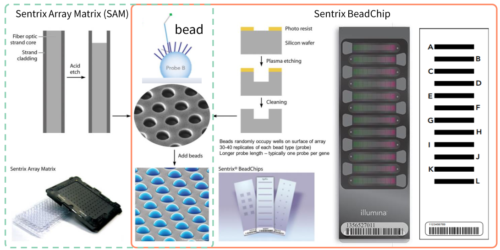
微珠则为芯片的核心部分，每个微珠的表面，都各偶联某种序列的 DNA 片段。每个微珠上，有几十万个片段，而一个珠子上的片段，都是同一种序列。
其序列设计如图所示，由靠近微珠端的 Address 序列和 Probe 序列构成。Address 序列是标识微珠的标签序列，通过碱基的排列组合组成该微珠的 ID。在 illumina 生产芯片的过程当中，是把要做芯片的几十万种微珠，按设定的比例或者客户需求进行混合，撒到玻璃基片上。在一张芯片的一个反应当中，每种珠子平均有 15 颗或以上。
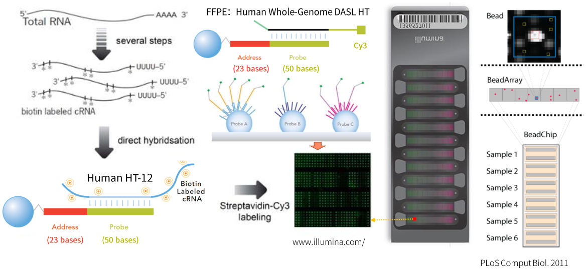
微珠随机地落入基片的小孔当中，再通过检测芯片上每个小孔当中的微珠上的 Address 序列，就可以知道，这个小孔当中是哪种微珠。
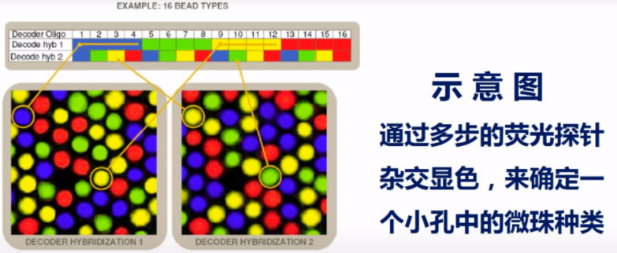
所以，illumina 公司出厂的每一张芯片，都要跟一个.dmap文件，标注每一张芯片的每一个微孔当中，分别是哪种微珠。自然地，获得芯片相应的地图文件之后，才能解读测序数据。
Probe 序列：作为探针序列，其作用是与目标 DNA 互补杂交；且与 Address 序列存在一一对应的关系。
检测样本的制备和 Affymetrix 芯片基本相似，也是要产生带标记的 cRNA，再和探针杂交，这里我们常用的标记有两种，一种是生物素（biotin）标记，再加荧光结合的抗生物素蛋白与生物素结合即可，见于最常用的 Human HT-12 系列，目前为 V4 版本。
另一种是待检测 cRNA 上直接标记荧光，比如专供石蜡包埋（FFPE）标本的 Human Whole Genome DASL HT 芯片就是这种。大家可以看到，标记了荧光的 cRNA 被探针“毛珠”粘住了，表达量越高的 RNA 被粘住的机会也越多，荧光就越强。这些荧光的点阵正是一个个长满探针排列在硅片孔里的微珠。
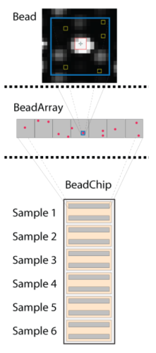
上图显示了 WG-6 BeadChip 芯片中典型珠子（顶部）的示意图，其中标记了阳性（红色正方形）和局部背景（黄色正方形）信号的像素。许多包含 50-mer 探针的微珠位于每个 BeadArray 反应池中。图示为了清晰一些，大大降低了微珠的密度。
视频讲解：https://v.qq.com/x/page/d0171ihr74i.html
参考文章：https://mp.weixin.qq.com/s/7D0TmxWubcMnnaXOtn4bow
3. Agilent 生物芯片原理¶
Agilent芯片的基片是一个玻璃片。它的大小和一张标准的病理载玻片一样大小。
它的芯片制作过程，是用和喷墨打印一样的技术来进行制作的。喷墨打印机，是在墨盒里面是装了“红、黄、蓝、黑”四种颜色的墨水。而Agilent打印生物芯片的墨盒里面，是用带保护基团的A/C/G/T四种碱基底物，来代替了颜色墨水。分别含有4种碱基底物的小液滴，被按照设计的探针序列，依次、层叠地喷到玻璃板的确定的位置上。
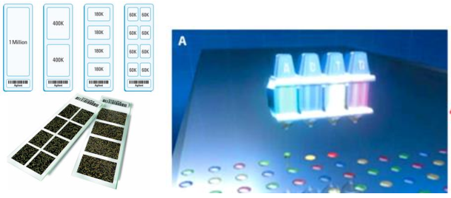
在每一个碱基的延伸过程当中都有 3 个步骤，分别是偶联、氧化、 去除保护基团，即先把一个核苷酸喷到玻璃板上，然后再喷上第二个碱基，让两个碱基之间发生偶联，继而经过氧化，把亚磷酸基团氧化成磷酸基团。然后，把连在第二个碱基 5’ 位羟基上的 DMT 保护基团去掉， 留下一个自由的 5’ 位羟基，再进行下一步的延伸反应。 不断重复这个过程，DNA 链就会不断地延长。 Agilent 的这个 DNA 链合成技术，每一步的合成效率都非常高，可以达到 99%以上。这让 Agilent 可以在芯片上得到很长的 DNA 链， 最长可以达到 300 个碱基的长度。
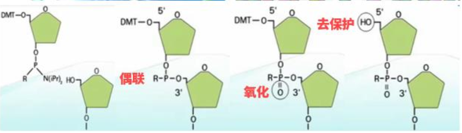
Agilent 表达谱芯片的检测原理也是基于 3’ IVT 原理。首先用 Oligo dT 引物和 T7 逆转录酶来得到第一链的 cDNA， 然后再转录或复制出第二链的 cDNA，得到双链 cDNA，这个双链cDNA 是带有 T7 启动子的。接下来， 如果是单色（或单通道）芯片杂交流程，我们只进行这张图的左边的蓝色部分，使用 T7 逆转录酶，以带有 A、 T、 U 碱基的核苷酸和标有 Cy5 荧光基团 CTP 为底物逆转录出 cRNA 来；如果是双色（或双通道）杂交流程，要加上图示的右半边红色的部分，即对于另一个样本（参照组 reference），就用标有 Cy3 荧光基团 CTP 做为底物之一。这样， Cy3（或 Cy5） 荧光基团就在体外逆转录过程当中，被带入到新合成的 cRNA链当中去了。 经纯化后，将这个制备好的 cRNA 与芯片探针进行杂交，在激光扫描仪下检测每个点的荧光强度，并计算出对应基因的 RNA 表达量来。不同于单色芯片以计算荧光强度作为表达值，双色芯片的表达值则计算的是实验组和参照组的比值。
视频连接：https://v.qq.com/x/page/h0174dobvcb.html
参考：https://mp.weixin.qq.com/s/8qUblDoNV3AobGdiwl8Aig
需要注意的是，对于双色芯片，我们称标记第二种颜色的样本为参照组（reference），它可以是对照组样本（如用同一个患者的癌旁组织作为癌的对照），也可以仅仅是一个基因表达的参考，如使用一种或几种肿瘤细胞系的 RNA 混合物作为参照组。 GEO 上使用 Agilent 双色芯片的数据集的表达谱，常常给出的是两种基因的表达强度比值，并取 log2；但也有些数据集虽然用的也是这款芯片，但只使用了单色单样本，这时候就直接和普通单色芯片一样分析即可。
二. 芯片数据库¶
比较大的芯片数据库有美国 NCBI 的 GEO，欧洲 EMBL-EBI 的 ArrayExpress，日本 DDBJ 的 GEA，不过这个 GEA 直接连接到 ArrayExpress，还有美国 NCI 下属的 TCGA，里面也有大量肿瘤芯片数据，不要误以为 TCGA 全是测序数据。其中 GEO 是最大的芯片数据库，其次是 ArrayExpress。这里就介绍GEO这个数据库。
1. GEO数据库简介¶
GEO，全称 Gene Expression Omnibus（基因表达综合数据库），是由美国国立生物技术信息中心NCBI创建并维护的基因表达数据库。它创建于2000年，收录并整理了全球范围内研究工作者上传的微阵列芯片、二代测序以及其他形式的高通量基因组数据，这些数据包括基于单通道和双通道微阵列的实验，检测mRNA，基因组DNA和蛋白质丰度，以及非阵列技术，如基因表达系列分析（SAGE），质谱蛋白质组学数据和高通量测序数据。也就是说只要是目前已经发表的论文，论文中涉及到的基因表达检测的数据都可以通过这个数据库中找到。关键是这个数据是免费的！随着芯片和测序技术的蓬勃发展和应用， 2000 年美国国立生物技术信息中心, NCBI 创建了 GEO 并维护至今。 2003 年到 2004 年 GEO 数据库逐渐开放供研究者获取和分析， 2001 年到 2006 年， GEO 数据上传的规则，也就是 MIAME（The MinimumInformation About a Microarray Experiment guidelines）逐渐形成并实行，并成为提交芯片数据的全球规范。
GEO 数据库收录的数据类型有：
- 01）基因芯片或高通量测序的基因表达数据，包括 ncRNA
- 02）基因芯片或高通量测序的 ChIP 数据
- 03）基因芯片或高通量测序的基因组甲基化数据
- 04）高通量实时定量 PCR 的数据
- 05）微阵列比较基因组杂交技术（arrayCGH）的基因组变异数据
- 06）单核苷酸多态性（SNP）芯片数据
- 07）基因表达系列分析（SAGE）的数据
- 08）蛋白芯片数据
- 09）十几组大规模平行测序 MPSS 数据
- 10）十几组质谱 MS 数据
- 11）其他
2.ArrayExpress 数据库¶
NCBI 的基因表达综合数据库 GEO 和欧洲生物信息学研究所（EBI）的 ArrayExpress 是芯片数据的两个主要公共数据库。尽管它们具有不同的设计，但两个数据库都支持由 MIAME 定义的所有数据元素。 因此 GEO 和ArrayExpress 数据库及数据集结构十分相似，可以类比的学习。ArrayExpress 数据库在 2002建立，开始收录芯片数据， 2008 年开始收录高通量测序数据，同样，近几年测序数据的增长量逐渐超过芯片数据。 ArrayExpress 是 GEO 数据的一个良好的补充。
ArrayExpres数据库的主页链接（https://www.ebi.ac.uk/arrayexpress/）
三. GEO数据库使用教程¶
1.检索¶
检索界面，网址：http://www.ncbi.nlm.nih.gov/geo

或者通过NCBI首页，All Databases下拉框中选择GEO DataSets，输入关键词即可搜索。
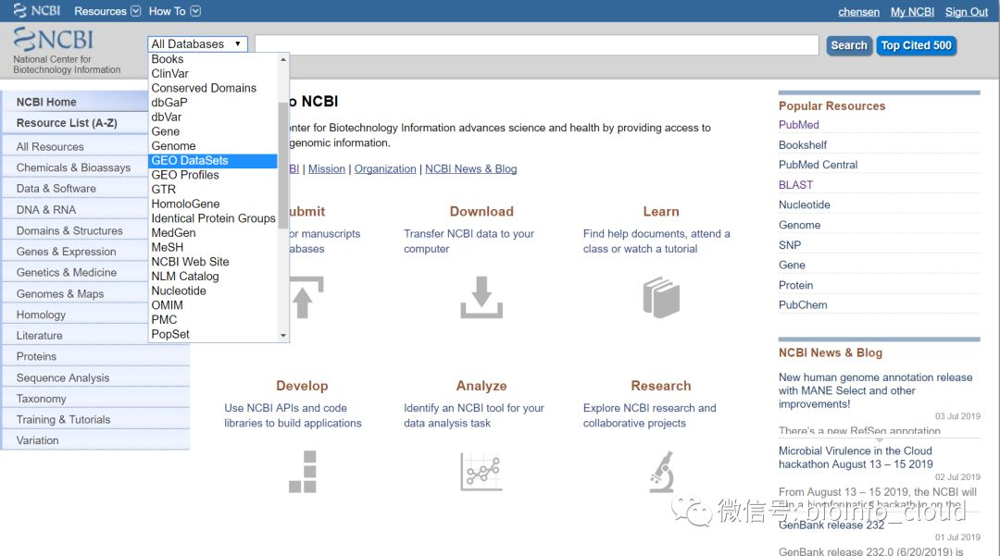
这里以检索肺癌（lung caner）的数据为例。
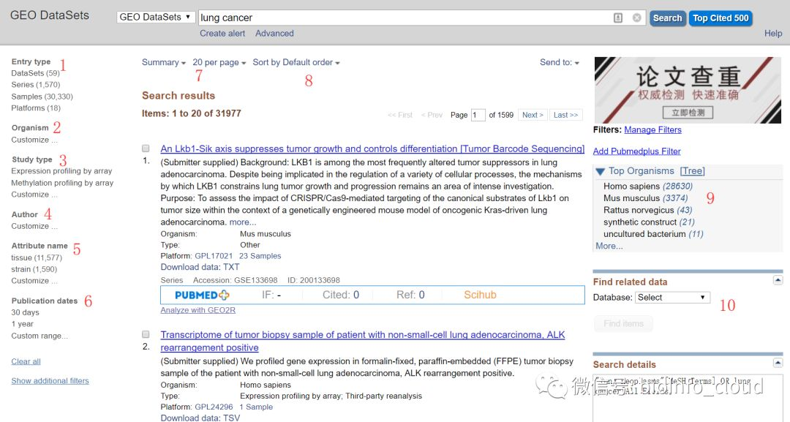
搜索结果可以通过7来设置每页显示个数，通过8选择排序方式，可以通过左侧的选项对搜索结果进行筛选。Entry type有四种:Datasets，Series，Samples，Platforms。分别对应的是，GEO Dataset (GDS) 数据集的ID号、GEO Series (GSE) 研究的ID号、GEO Sample (GSM) 样本ID号和GEO Platform (GPL) 芯片平台。
平台¶
平台记录描述阵列上的元件列表（例如，cDNA，寡核苷酸探针组，ORF，抗体）或可在该实验中检测和定量的元件列表（例如，SAGE标签，肽）。每个平台记录都分配有唯一且稳定的GEO登录号（GPLxxx）。平台可以引用多个提交者提交的许多样本。
样品¶
样品记录描述了处理单个样品的条件，它经历的操作以及从中得到的每个元素的丰度测量。每个样品记录都分配有唯一且稳定的GEO登录号（GSMxxx）。Sample实体必须仅引用一个Platform，可以包含在多个Series中。
系列¶
系列记录定义了一组被认为是组的一部分的相关样本，样本如何相关，以及它们是否以及如何排序。A系列提供了整个实验的焦点和描述。系列记录还可能包含描述提取数据，摘要结论或分析的表格。每个系列记录都分配有唯一且稳定的GEO登记号（GSExxx）。
数据集¶
GEO DataSet（GDSxxx）是GEO样本数据的精选集合。GDS记录代表了一系列具有生物学和统计学意义的GEO样本，构成了GEO数据显示和分析工具套件的基础。GDS中的样本指的是同一个平台，也就是说，它们共享一组共同的探测元素。假设GDS中每个样本的值测量值以等效方式计算，即背景处理和标准化等考虑因素在整个数据集中是一致的。通过GDS子集提供反映实验设计的信息。
记住大小关系：一个GDS可以有多个GSM，一个GSM可以有多个GSE，至于GPL，一般不接触，我们通常接触的都是GSE系列（一个GSE里面有多个GSM）的数据。
接下来的几个就好理解了，2是指物种类型，点击一下会弹出一个对话框，选择自己要的就可以对搜索结果进行筛选了，也可以直接点击9处进行筛选，一般不是人就是鼠，通常是选择人。
3通过研究类型进行筛选，比如甲基化，单核苷酸突变等进行筛选。
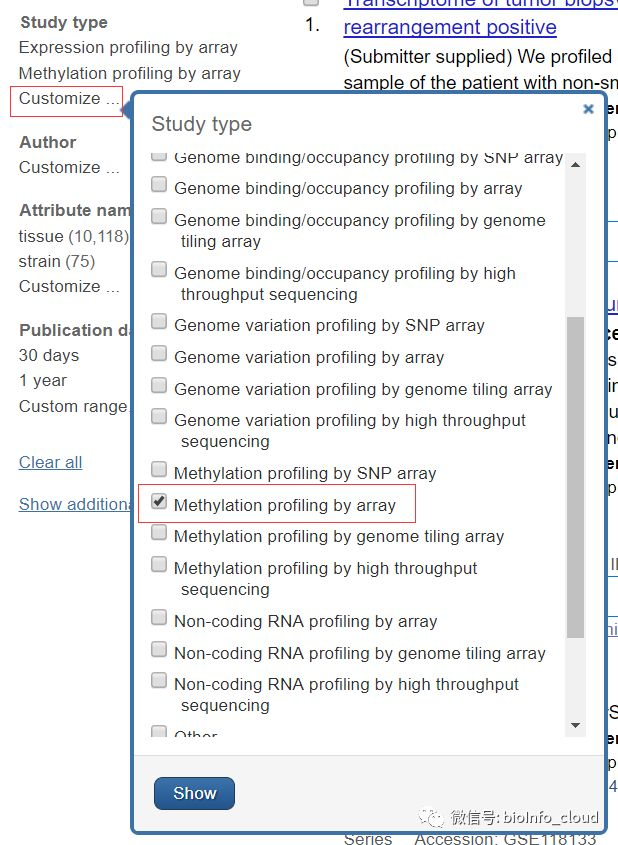
4是根据作者进行筛选，个人感觉一般用不到。5是属性名称，表示数据来自于组织还是特定的细胞类型。6是指初版日期。
上面是通过关键词检索，只是为了让大家了解一下检索页面，通常在文章中我们会看到作者都是用GSE**号，我们知道GSE编号，我们也可以直接通过检索GSE编号获取信息，同时也可以通过GDS*,和GSM来检索。GSE编号检索比较常用。
GDS编号检索结果页面，以GDS402为例
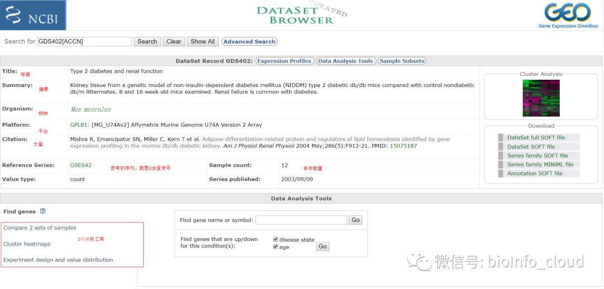
GSE编号检索结果页面
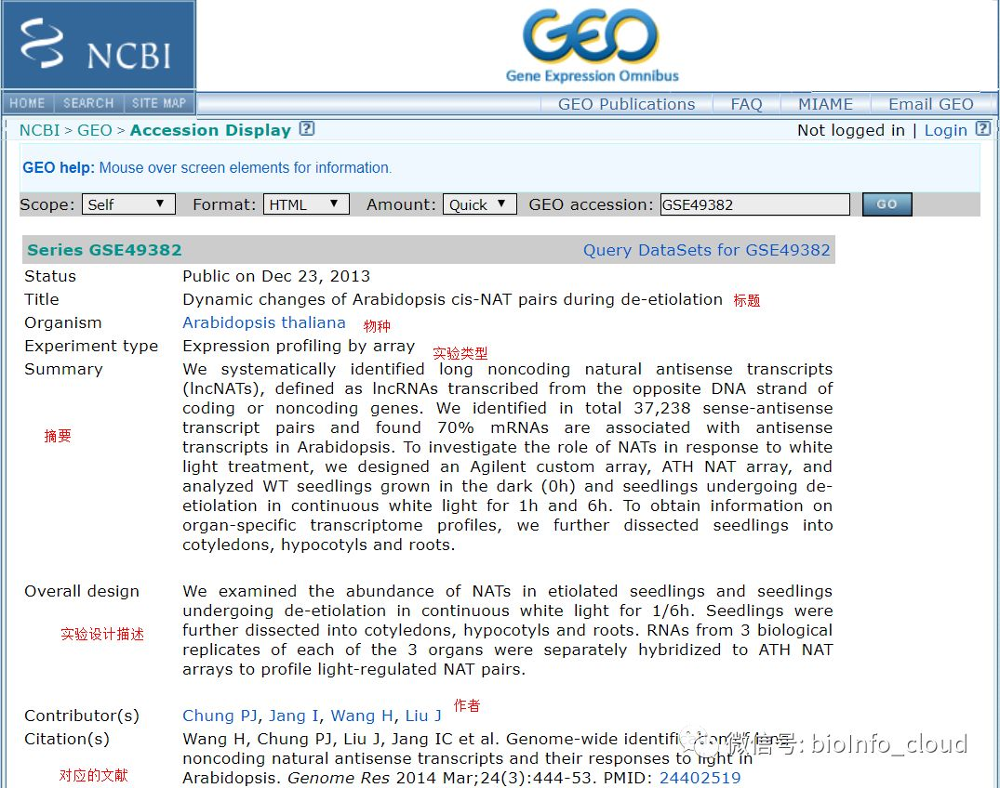
soft和miniml都是表示该platform的基础信息，比如GPL编号，上传日期等，soft文件的部分内容如下:
^DATABASE = GeoMiame!Database_name = Gene Expression Omnibus (GEO)!Database_institute = NCBI NLM NIH!Database_web_link = http://www.ncbi.nlm.nih.gov/geo!Database_email = geo@ncbi.nlm.nih.gov^PLATFORM = GPL20814!Platform_title = Human miRNA Array miRbase release 19!Platform_geo_accession = GPL20814!Platform_status = Public on Jun 12 2017!Platform_submission_date = Aug 18 2015!Platform_last_update_date = Jun 12 2017
在soft文件中，每种类别的信息以^开头，常见的类别如下所示
DATABASE
PLATFORM
SAMPLE
SERIES
DATABASE代表GEO数据库的基本信息，PLATFORM代表该平台的基本信息，SAMPLE代表用该平台得到的样本信息，SERIES代表使用该平台得到的一组样本。
在每种类别中，!开头代表一种类型的信息，常规格式为key = value, 比如:Platform_geo_accession = GPL17515
对于芯片平台而言，还会提供探针和基因之间的对应关系等信息，在对应的网页上，我们可以看到如下的表格.
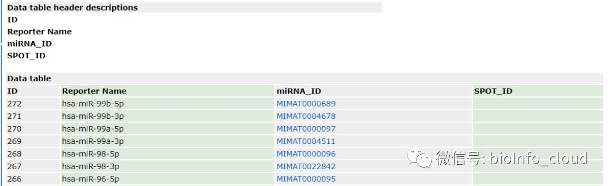
这部分内容在soft文件中也是存在的，示意如下:
!platform_table_beginID Reporter Name miRNA_ID SPOT_ID272 hsa-miR-99b-5p MIMAT0000689 271 hsa-miR-99b-3p MIMAT0004678 270 hsa-miR-99a-5p MIMAT0000097 269 hsa-miR-99a-3p MIMAT0004511 268 hsa-miR-98-5p MIMAT0000096...!platform_table_end
采用配对的两个!叹号来表示数据的开始和结束，在中间存放对应的表格数据。
miniml中的内容和soft是一样的，只是用XML格式来存储上述信息，而supplement file则是由提交者自己上传的一些补充文件，没有明确的格式。
GSM编号检索页面


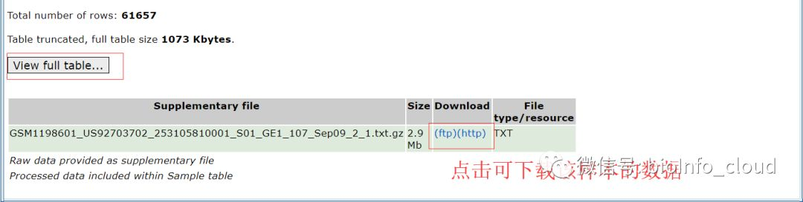
在这个页面，我们可以看见样本在进行试验处理的详细描述，以及每个探针所检测的的信号值。
除此以外，我们还可以通过GEO数据库的仓库浏览器就行特定的检索。
在GEO数据库首页点击Repository Browser
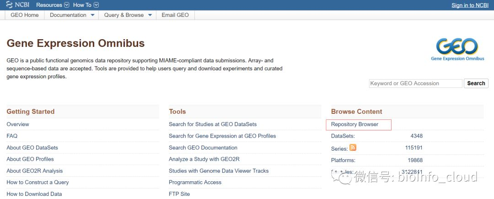
进入的页面我们可以看见，序列，平台，样本和物种的选项卡，我们可以通过其进行检索。
比如我们通过序列进行检索芯片表达数据或者甲基化数据，就点击相应的选项
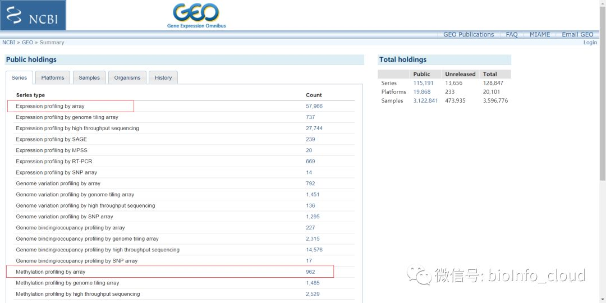
点击Methylation profiling by array进入新的页面，我们就可以看到具有甲基化数据的GSE数据集的详细描述，包括标题，序列类型，样本数，物种等。

我们还可以通过关键词对结果进行筛选。比如你只和癌症有关的数据。输入cancer，结果就只有151个。

关于GEO数据库检索就介绍到这里，我们接下来就介绍GEO在线的分析工具。
2.分析工具¶
我们再看看GDS号检索的结果页面

(1).Find gene工具¶
该工具用于直接查找该数据集中该基因的表达谱数据。
我们以检索brca1基因为例
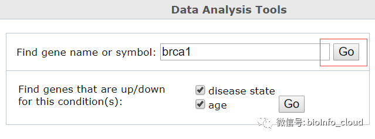
我们会跳到一个新的检索结果页面

往下拉我们会找到一个Brca1的一个表达谱数据集。
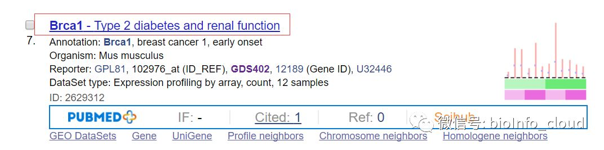
点击右侧的图进入详细页面，该页面具有该基因在各个样本中的表达信息，并且样本的分组信息也有。
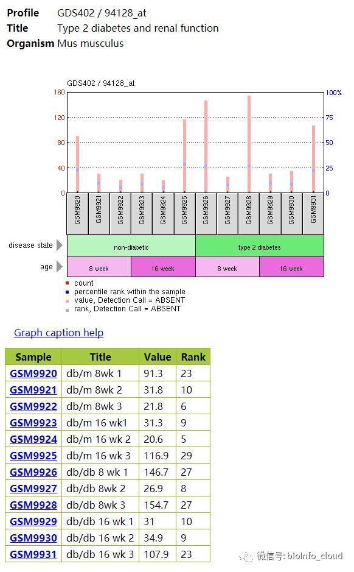
Find genes that are up/down for this condition(s)可以根据选择的实验筛选条件来找到一序列随该筛选条件有较明显表达差异的基因表达谱。假设我们要检索和疾病分期有关的上调或下调的基因。

可以看到检索到了79个基因。

我们点击第一个基因，同样可以看到该基因的详细信息。

(2).Compare 2 sets of samples工具¶
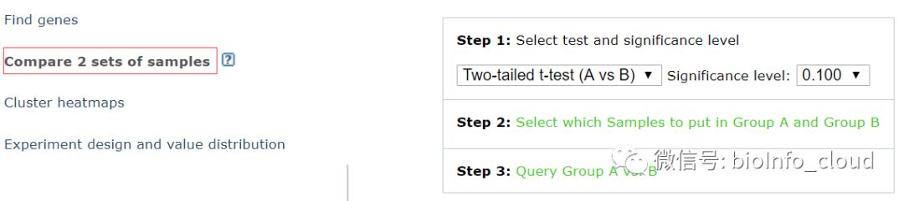
我们点击Step2： Select which Samples to put in Group A and Group B会弹出一个窗口，让我们自己进行分组。我们可以看见A组合B组的GSM号是一样的，需要将他分在哪一组就在哪一组点击一下就行。背景变为深灰色就表示被选中，这里将GSM9920-GSM9925定位A组，其余定位B组。点击OK.

点击OK后我们会看见Step2下面会出现分组的样本编号。

点击Query Group A vs. B我们就会获得5608个表达差异的基因。

(3).Cluster heatmaps工具¶


点击Display，或获取一个聚类的热图，鼠标放在热图上谁有一个红色的虚线框，可以通过上下拖动边框调整选择的区域大小。可以点击DOWNLOAD 下载数据。

点击Stack up 可以将所选择的区域放大，能够看见基因名称。
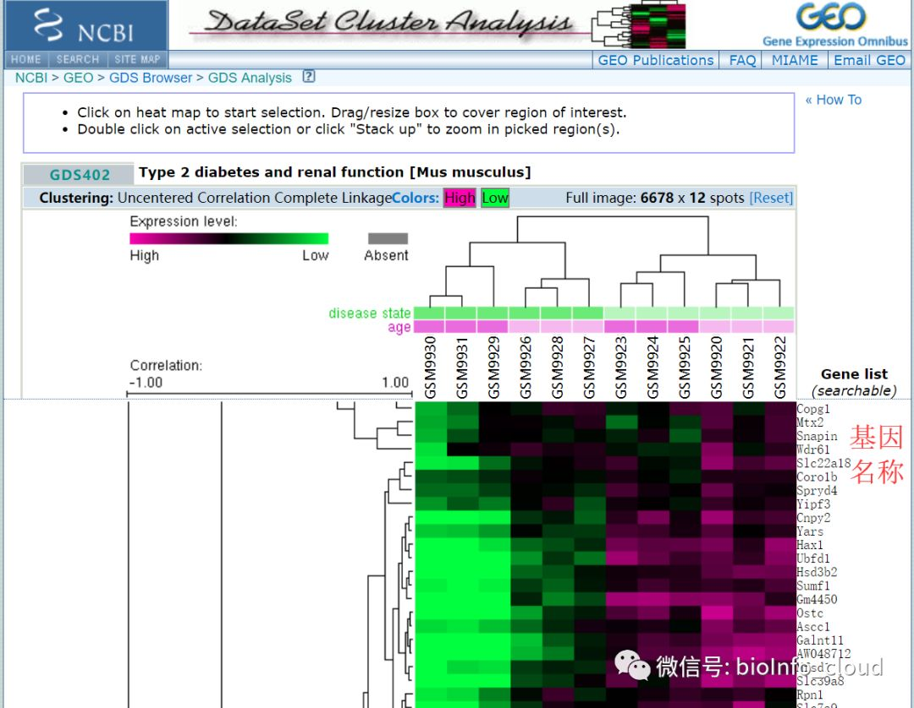
点击Plot value可以看见探针在样本中的曲线图。

此外Cluster heatmaps工具中还有一个Partitional (K-means/K-medians)的聚类。

然后通过设置高低表达的颜色，设置聚类个数（cluster，2-15），这里选择4，点击Display
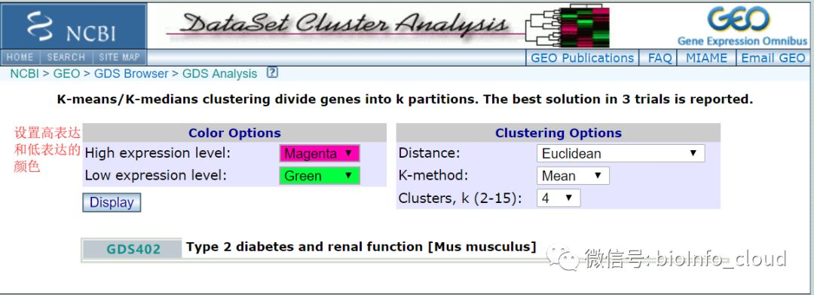

而对于By location on chromosome，是将基因定位于染色体上进行分析。

结果如下：
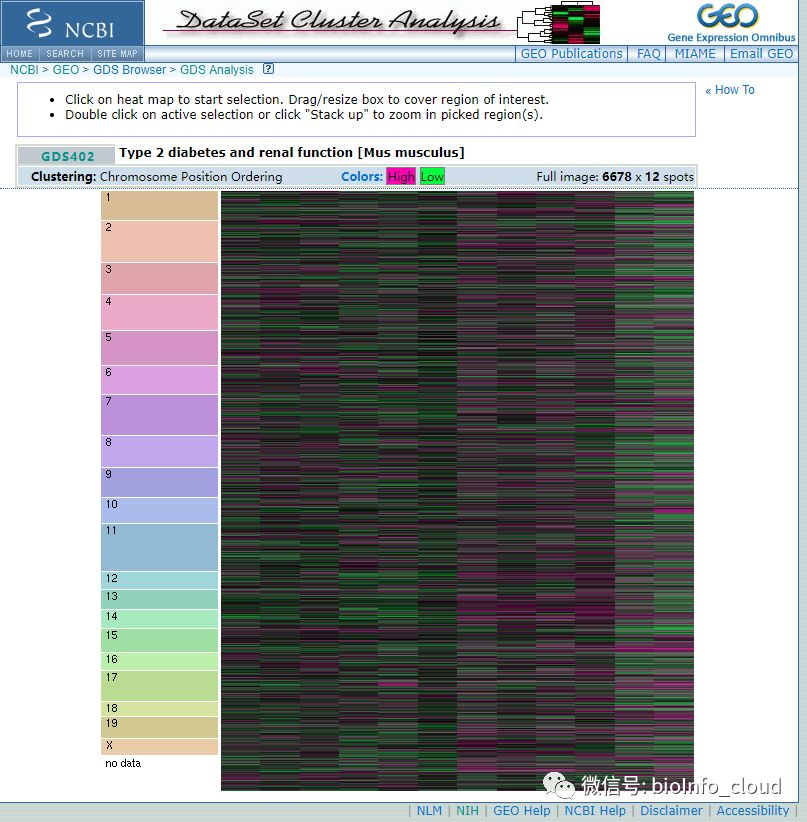
(4).Experiment design and value distribution工具¶
这个工具就是一些箱线图
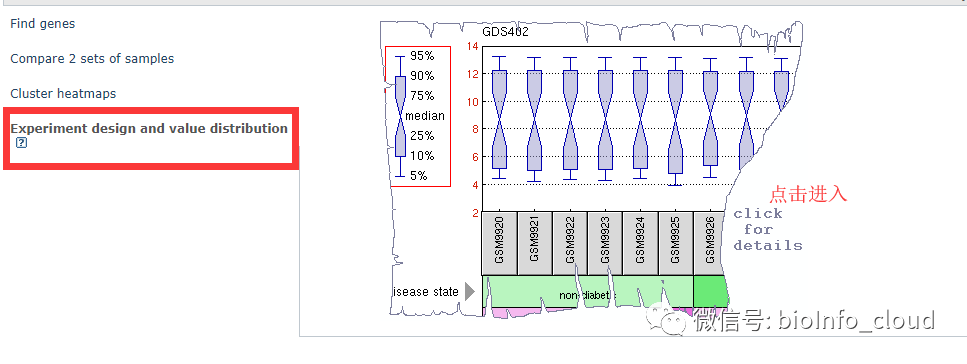
这就是每个样本中所有基因表达值的一个汇总，这是归一化后的箱线图，看起来质量不错。
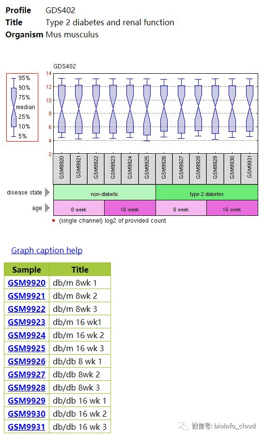
(5).GEO2R¶
GEO2R是一个交互式web工具，它允许用户比较GEO系列中的两组或两组以上的样本，以便识别在不同实验条件下表达不同的基因。结果显示为按重要性排序的基因表。
GEO2R使用Bioconductor项目中的GEOquery和limma R包对原始提交者提供的处理过的数据表执行比较。
与GEO的其他数据集分析工具不同，GEO2R不依赖于精心设计的数据集，而是直接查询原始的系列矩阵数据文件。这使得及时分析更多的地理数据成为可能。然而，重要的是要认识到，无论数据类型和质量如何，这个工具几乎可以访问和分析任何GEO系列。
在GSE检索结果页面就可以看到这个工具，这里以GSE49382为例，
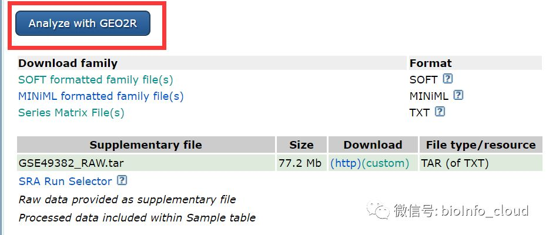
点击Analyze with GEO2R进入页面可以看见所有样本的信息列表

通过Define groups将样本进行分组,输入相应的组名，
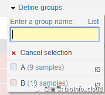
点击组A，会弹出一个对话框，让你选择要归入A组的样本，点击相应的样本即可（按住Crtl多选），我这里随便点。

点击Top250会显示前250个基因

结果在浏览器中显示为按p值排列的前250个基因的表。p值最小的基因最显著。单击一行显示该基因的基因表达谱图。图中的每个红条表示从原始提交者提供的样例记录的value列中提取的表达式度量。
使用Select columns特性修改表中包含哪些数据和注释列。有关数据列含义的信息在Summary statistics部分中提供。
在Options选项卡中编辑测试参数，然后回到GEO2R选项卡并单击Recalculate来应用编辑。
要查看超过前250个结果，或者如果想保存结果，可以使用save all results按钮下载完整的结果表。下载的文件以制表符分隔，适合在Excel等电子表格应用程序中打开。
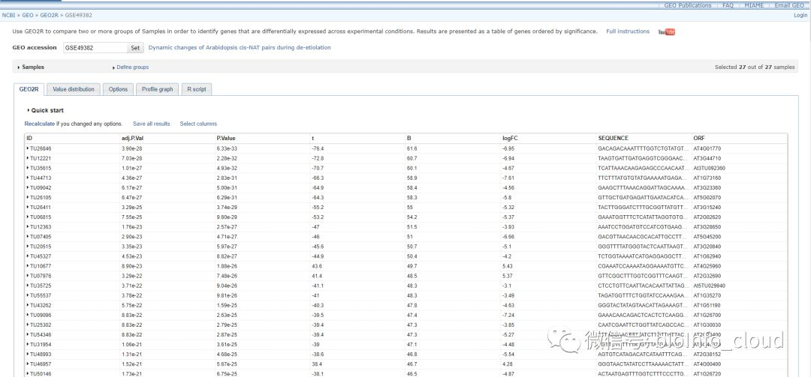
编辑options和features
（1）Value distribution¶
计算和查看所选示例值的分布。值是提交者提供的原始数据，在此基础上执行GEO2R计算。查看分布对于确定选择的样本是否适合进行比较非常重要。通常，以中间值为中心的值表示数据是标准化的和可交叉比较的。

（2）Options¶

Apply adjustment to the P-values
Limma包提供了几个p值调整选项。这些调整，也称为多次测试纠正，试图纠正错误阳性结果的发生。默认选择Benjamini & Hochberg错误发现率方法，因为它是对微阵列数据最常用的调整，并在发现统计上重要的基因和限制假阳性之间提供了良好的平衡。
Apply log transformation to the data
GEO数据库接受各种数据值类型，包括logged和未logged的数据。Limma包需要使用logged数据为了解决这个问题，GEO2R有一个自动检测特性，它检查所选样本的值，并自动执行log2转换。可选择是否自动转换。
Category of Platform annotation to display on results
选择要在结果上显示的注释类别。基因注释来自于相应的平台记录。有两种注释类型:
NCBI生成的注释可用于许多记录。这些注释是通过从平台中提取稳定的序列识别信息，定期查询Entrez基因和UniGene数据库，生成一致的、最新的注释而得到的。默认情况下选择基因符号和基因标题注释。NCBI生成的注释的其他类别包括GO术语和染色体位置信息。
提交者提供的注释可用于所有记录。这些表示提交者提供的原始平台注释。请注意，提交者提供的注释在样式和内容上有很多多样性，而且自提交时起可能就没有更新过。
（3）Profile graph¶
通过从平台记录的ID列输入相应的标识符来查看特定的基因表达谱图。此功能不执行任何计算;它只是在样本间显示基因的表达值。要使此功能正常工作，不需要定义示例组。
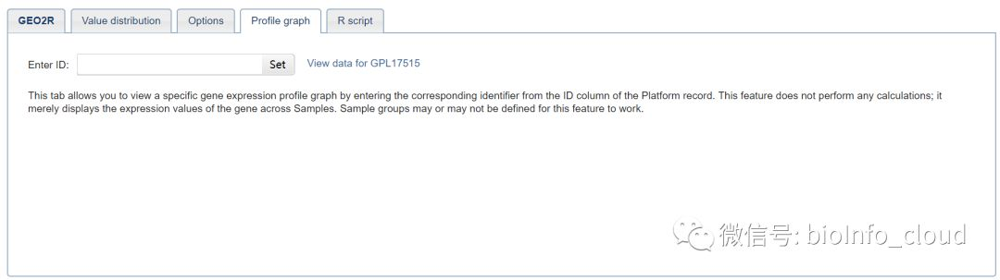
（4）R script¶
此选项卡打印用于执行计算的R脚本。这些信息可以保存下来，作为计算结果的参考。
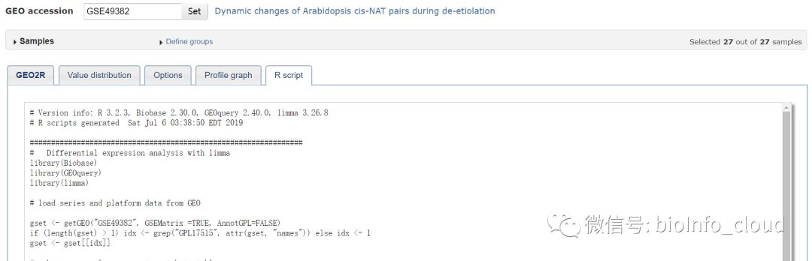
四. ArrayExpress 数据库使用教程¶
进到主页之后，我们可以先看一下这个数据库的信息，比如它是功能基因组数据，目前有74700个实验的数据，2556953个芯片数据，60.91TB的存档数据，这都是在描述ArrayExpres数据库的数据量的大小。
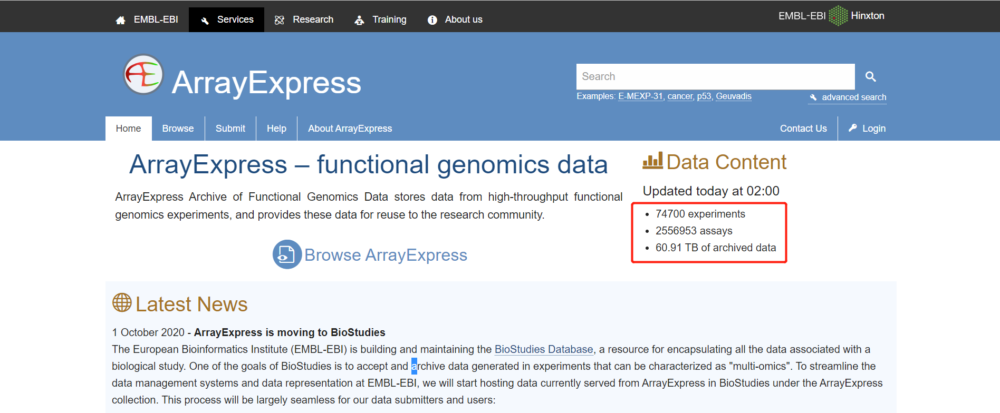
了解完之后，我们可以在Search栏进行数据的搜索，举个栗子：我想要搜一个关于breast cancer 的研究，那我就输入关键字：breast cancer ，然后点击搜索。
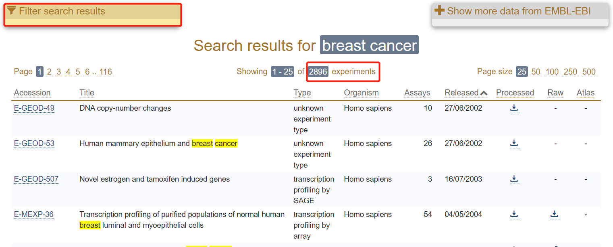
搜索完之后，我们看一下结果，有2896个实验的研究出来了，其中有一些可能不是你想要的，怎么办呢，咱们可以加一些过滤条件，限定一下，以减少实验研究的数量。"Filter search results"这个就是添加过滤条件的地方，我现在加一些条件，然后点击filter即可过滤。
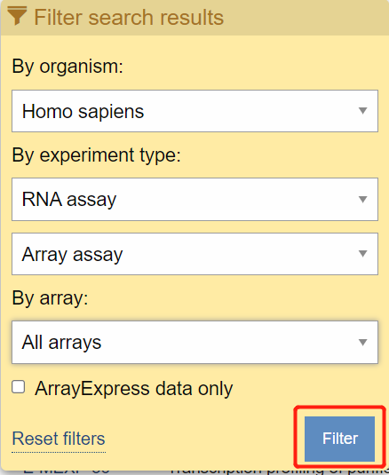
过滤后的结果就少了很多。
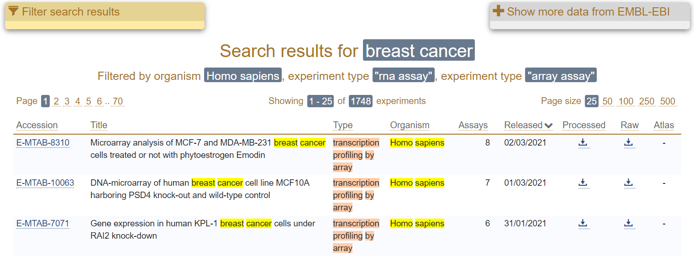
我把出来的这个结果对应的每个字段解释一哈：（以E-MTAB-8310为例）
-
Accession:数据库ID，芯片的数据库编号；
-
Title:题目也就是文章的研究方向；
-
Type:实验类型，转录组分析；
-
Organism：物种，研究的物种是人；
-
Assays：芯片样本数，有8个样品；
-
Released:上传日期，2021年3月2号；
-
Processed：处理过的数据（包括：矩阵数据和单样品数据）。如果这里有下载的箭头，可以下载到它们。
-
Raw:原始数据链接，打开后可以下载数据。下载的页面如下。
我们可以点击Accession ID 查看该数据集的详细信息，该信息页面也有下载数据的地址。
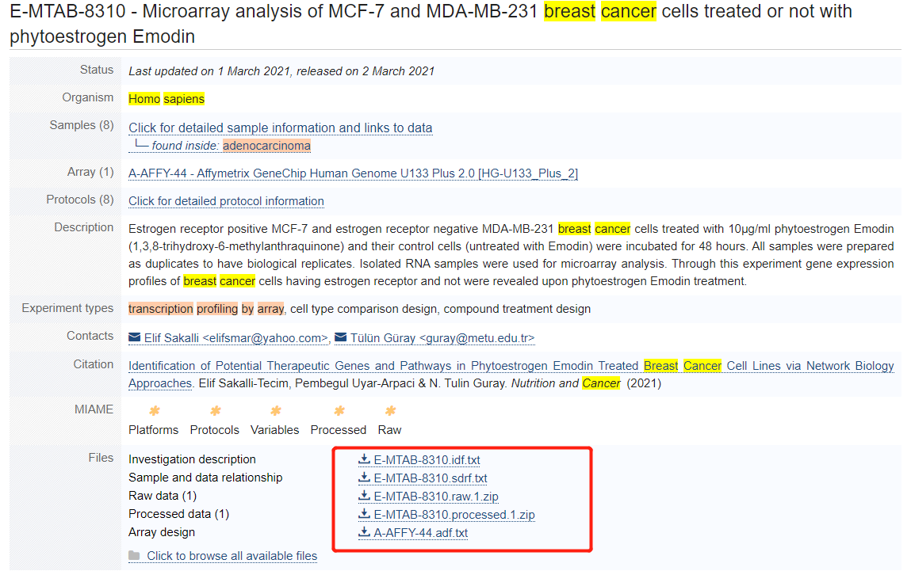
参考：https://mp.weixin.qq.com/s/UWMcXFjtydTU9W3JTnUrhA
五. 芯片数据分析¶
1. 处理芯片数据的R包¶
芯片原始数据文件包括： ① 芯片图像扫描得到的记录光信号强度的Intensity文件 ② 包含芯片类型、探针排布等芯片具体设计信息的Design文件 ③ 包含探针注释信息、探针序列等信息的Annotation文件 ④ 包含样本分组、实验处理等信息的Targets文件。不同芯片厂商的文件格式不同，下面是三大厂商芯片数据相应文件的格式信息：
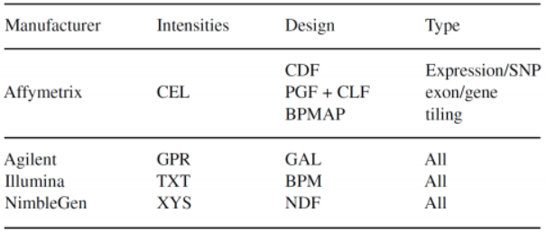
原始芯片数据的来源： ① GEO、ArrayExpres等多个存储芯片实验数据的数据库 ② 芯片公司的官方网站。
处理这些数据会用到下面这些R包：
affy/oligo；beadarray/lumi；limma ；AgiMicroRna ；GEOquery ；readr/readxl。
(1). Affymetrix芯片¶
Affymetrix芯片原始数据最常用的格式是CEL格式，从读取原始数据到转化为基因表达量矩阵表格,可以使用affy ,oligo等R包进行数据的质量控制,背景矫正,数据标准化,其中标准化方法常用的为rma算法和mas5算法。
1). affy包¶
R包affy用于读取Affymetrix芯片CEL文件，也可用于读取一些较早期的affy芯片数据，如3'IVT 芯片，常见的U133系列（GPL570、GPL57K GPL96） ，不适合用于读取较新的affy芯片类型，如Exon ST、 GeneSK SNP芯片。 affy读取CEL文件函数是read.affybatch/ReadAffy 读取后的对象类别：AffyBatch
2). oligo包¶
oligo读取Affymetrix芯片CEL文件，也可以读取affymetrix的几乎所有芯片类型的CEL文件，此外，oligo还可读取Roche NimbleGen芯片的.xys原始数据文件 ，oligo读取CEL文件函数是read.celfiles，读取后的对象类别：
| 芯片数据 | 对象 |
|---|---|
| Expresssion arrays | ExpressionFeatureSet |
| Gene ST arrays | GeneFeatureSet |
| Exon ST arrays | ExonFeatureSet |
| SNP arrays | SnpFeatureSet |
| Tiling arrays | TilingFeatureSet |
(2). Illumina芯片¶
Illumina芯片数据分析的4个起点： ① Pixel-level,每个像素点对应一个数据， tif/tiff 格式； ② Bead-level,每个bead对应一个数据， 类似于affymetrix的单个probe数据， 具体数据包括txt/idat/Iocs /sdf/ xml等多种格式； ③ Summary-level,每个bead type对应 —个数据，类似于affy的probe set数据， txt/CSV 格式； ④ 公共数据库存储的表达矩阵数据，如 GEO/ArrayExpress，部分数据集已经过预处理，属于summary-level。
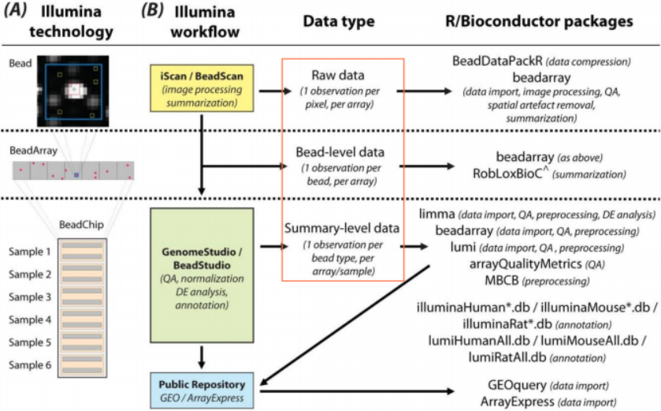
使用iScan/BeadScan扫描图像及处理图像信息时，因软件的具体版 本和设置参数不同，产生多种不同格式的原始数据文件。 ① .txtfiles,包含所有beads坐标数据和已减去背景值的光信号强度值 ② .tiffiles,扫描后得到的图像文件 ③ .Iocs files,包含所有beads的坐标信息 ④ .idatfiles,专有的二进制文件用于储存光信号强度数据，可供 BeadStudio/GenomeStudio读取进行后续分析 ⑤ .xml files,包含仪器的扫描参数设置和提取光强度值数据的具体方法信息 ⑥ .bgx files,包含探针注释信息 ⑦ Metrics.txt,包含扫描芯片的质量参数信息 ⑧ .sdf files,包含样本/芯片的具体构架、布局信息 ⑨ IBS (Illumina Bead Summary) files，.csv格式，summary-level 数据。
1). limma包¶
read.ilmn函数读取summary-level数据 ， read.idat读取idat数据。
2). beadarray包¶
readlllumina函数最常用，用于读取bead-level数据 ；readTIFF函数读取pixel-level图像数据 ；readldatFiles函数读取idat文件； readLocsFile函数读取.Iocs文件； readBeadSummaryData函数读取summary-level数据。
3). lumi包¶
lumiR函数读取summary-level数据 lumiR.batch函数批量读取summary-level数据
4). illuminaio包¶
readIDAT函数读取idat数据 ；readBGX函数读取.bgx文件。
(3). Agilent芯片¶
1). limma¶
limma包中的read.maimages函数不限于Agilent芯片数据，可用于读取多个平台芯片文件，但不适用于affymetrix及illumina芯片数据 ，可读取单色及双色芯片数据；可读取多种图像分析程序产生的txt数据，如：Agilent Feature Extraction, Arrayvision, BlueFuse, GenePix, ImaGene, QuantArray (Version 3 or later), Stanford Microarray Database (SMD)，SPOT。
2). AgiMicroRna¶
readMicroRnaAFE 函数适用于Agilent的miRNA芯片数据。
2. 数据下载与处理¶
数据下载方法： 可以通过GEO网站链接、FTP站点直接下载，也可以通过R 包 GEOquery 的 getGEOSuppFiles 函数下载，在Linux系统下，可以使用wgetx axek arial2等软件下载。
(1). GEOquery包¶
1). getGEO()函数¶
这个函数是GEOquery包中的主要用户级函数。它指导下载（如果没有指定文件名），并将GEO SOFT格式文件解析为专门设计的R数据结构，使GEO SOFT格式的每个重要部分易于访问。
getGEO(GEO = NULL, filename = NULL, destdir = tempdir(),
GSElimits = NULL, GSEMatrix = TRUE, AnnotGPL = FALSE, getGPL = TRUE,
parseCharacteristics = TRUE)
Arguments
参数介绍：
| GEO | 用于下载和解析的表示GEO对象的字符串。(如。,‘GDS505’,‘GSE2’,‘GSM2’,‘GPL96’) |
|---|---|
| filename | 以前下载的GEO SOFT格式文件的文件名或它的gzip文件(在这种情况下，文件名必须以.gz结尾)。可以指定GEO或文件名中的一个，不能同时指定两个。GEO系列矩阵文件也进行了处理。注意，由于解析的是单个文件，所以返回值不是集合列表，而是解析GSE矩阵文件时的单个集合。 |
| destdir | 任何下载的目标目录。默认为当前工作目录。如果要保存文件供以后使用，您可能需要指定一个不同的目录。如果你的连接速度很慢，这样做是个好主意，因为有些GEO文件太大了! |
| GSElimits | 此参数只能用于从GSE加载GSMs的一个连续子集。它应该被指定为长度为2的向量，指定要加载的开始和结束(包括)GSMs。例如，这对于将大型GSE拆分为更易于管理的部分可能很有用。 |
| GSEMatrix | 一个布尔值，告诉GEOquery是否使用GEO的GSE Series Matrix文件。这些文件的解析比GSE SOFT格式文件的解析快许多数量级。默认为TRUE，意味着不会发生SOFT格式解析;如果出于某种原因需要GSE记录中的其他列，则设置为FALSE。 |
| AnnotGPL | 一个布尔值，默认值为FALSE，用于决定是否使用Annotation GPL信息。这些文件很好用，因为它们包含定期从Entrez Gene映射的最新信息。然而，它们并不适用于所有gpl;一般来说，它们只适用于GDS引用的GPLs |
| getGPL | 当获取GSEMatrix文件时，是否下载和包含GPL信息的布尔值默认为TRUE。如果你知道你将使用Bioconductor工具注释你的特征数据，而不是依赖于NCBI GEO提供的信息，你可能想把这个设置为FALSE。通过指定FALSE还可以大大减少下载时间。 |
| parseCharacteristics | 一个默认为TRUE的布尔值，用于判断是否解析GSE Matrix文件的特征信息(如果可用)。如果在解析特征时遇到麻烦，请将此设置为FALSE。 |
案例：
if (!requireNamespace("BiocManager", quietly = TRUE))
install.packages("BiocManager")
BiocManager::install("GEOquery")
gds <- getGEO(filename=system.file("extdata/GDS507.soft.gz",package="GEOquery"))
gse2553 <- getGEO('GSE2553',GSEMatrix=TRUE)
show(gse2553)
show(pData(phenoData(gse2553[[1]]))[1:5,c(1,6,8)])
2). getGEOSuppFiles()函数¶
NCBI GEO允许将补充文件附加到GEO系列（GSE）、GEO平台（GPL）和GEO样本（GSM）。这个函数“知道”如何获得基于GEO加入的这些文件。没有对下载的文件进行解析，因为计算机通常不知道文件格式。
getGEOSuppFiles(GEO, makeDirectory = TRUE, baseDir = getwd(),
fetch_files = TRUE, filter_regex = NULL)
参数介绍：
| GEO | GEO accession number such as GPL1073 or GSM1137 |
|---|---|
| makeDirectory | 应该为下载的文件创建一个“子目录”吗?默认是正确的。如果为FALSE，文件将直接下载到baseDir中。 |
| baseDir | 下载的基本目录。默认是当前工作目录。 |
| fetch_files | 逻辑值。如果为TRUE，则实际下载文件。如果为FALSE，只返回将要下载的文件名。有用的测试和获得一个列表的文件没有实际下载。 |
| filter_regex | 一个字符(1)正则表达式，用于过滤来自GEO的文件名，以限制那些将被下载的文件。这有助于限制，例如，仅下载bed文件。 |
(2). Affymetrix芯片原始数据的下载与处理¶
1). 数据下载¶
这里以GEO数据库中的数据为例
##下载芯片原始数据
ifelse(!dir.exists("geodata"),dir.create("geodata"),message("文件夹已存在"))
getGEOSuppFiles("GSE5823", baseDir ="geodata", makeDirectory = T) # 新建一个文件夹
#getGEOSuppFiles("GSE5823", baseDir = "geodata", makeDirectory = F) # 不会新建对应的文件夹
也可以获取数据地址URL后使用download.file函数下载，但这种下载方式比较慢，不推荐。
##获取下载链接
data_url <- getGEOSuppFiles("GSE5823", fetch_files = F, makeDirectory = F)
##是一个数据框
url <- as.character(data_url$url)
#使用R函数download.file下载
download.file(url, destfile = "geodata/GSE5823.tar")
如果是在Linux系统中，获取下载链接后，使用axel软件下载。
Axel 是 CLI (command-line interface) 下的一个多线程下载工具，通常我都用它取代 wget 下载各类文件，适用于 Linux 及 BSD 等 UNIX 类平台。在Ubuntu 上安装 axel 命令是：sudo apt-get install axel。在CentOS上安装命令是：sudo yum install axel。
2). 整理Targets文件¶
Targets文件包含样本信息的Tab分割的文本文件，每行对应一个芯片样本，每列对应样本名、样本分组、处理因素等变量信息 等，列名可以自己定义，该文件数据来源芯片原始数据文件，部分信息可能会整合在每个样本的原始数据文件中，但有时不全面，所以通常我们需要从GSE数据主页的实验设计信息和原始文献中去获取，然后自己整理， GSE页面Samples栏目下常有简要分组、处理信息。比如数据集【GSE5823】：
https://www.ncbi.nlm.nih.gov/geo/query/acc.cgi?acc=GSE5823
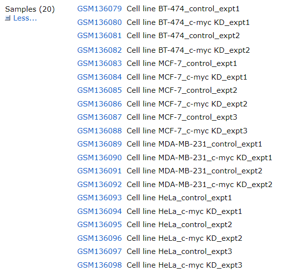
我们可以将Samples的内容复制到一个txt文本中读入，然后进行整理。下面是我整理GSE5823数据集的代码。
sampleInfo <- read.table("geodata/GSE5823/sampleInfo.txt",header = F,sep = "\t")
colnames(sampleInfo) <- c("sampleName","description")
celFileNames <- list.files("geodata/GSE5823/GSE5823_RAW",pattern = ".CEL.gz$",full.names = F)
sampleName <- str_split(celFileNames, pattern = "[.]", simplify = T)[,1]
celFlieInfo <- data.frame(fileName = celFileNames,sampleName = sampleName)
celFlieInfo <- merge(celFlieInfo,sampleInfo,by = "sampleName")
celFlieInfo$cellType <- str_split(str_split(celFlieInfo$description, pattern = "\\s+", simplify = T)[,3],
pattern = "_", simplify = T)[,1]
celFlieInfo$group <- ifelse(grepl("control",celFlieInfo$description),"control","c-myc KD")
write.table(x = celFlieInfo,
file = "geodata/GSE5823/Targets.txt",
quote = F,
sep = "\t",
row.names = F)
得到的信息如下，说白了，Targets文件就是样本信息，文件名对应的样本名称，分组等信息而已，你可以用Excel整理也是可以的，总之最后在R中读入可以得到类似下面的数据框就行。列名没有特殊要求，内容有一列就文件名称。
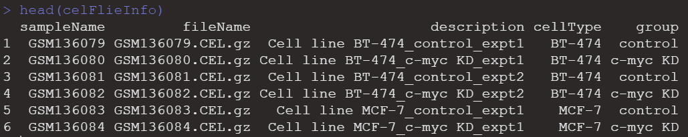
3). 数据读入¶
根据前面介绍的R包，读入数据的函数很多。affy包中有2个读取CEL文件的函数：read.affybatch()和ReadAffy()。
library(affy)
cel_files <- affy::list.celfiles("geodata/GSE5823/GSE5823_RAW",
full.name = T)
## affy包中有2个读取CEL文件的函数，推荐ReadAffy(),更灵活易用
cel1 <- read.affybatch(filenames = cel_files)
affy::list.celfiles()函数先获取cel文件的完整路径，其实与list.files()和dir()函数通过正则表达式获取一样，就是cel文件的路径而已。
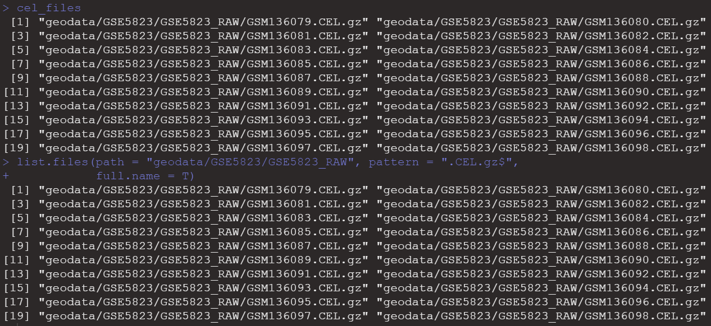
接着我们接可以通过read.affybatch()函数读取了，这里的参数就是前面的cel文件路径。
查看一下cel1这个数据的类型：AffyBatch类
这里我们可以看一下里面的信息，AffyBatch对象是一个S4类，你可以通过@符号索引出来看看里面的内容。
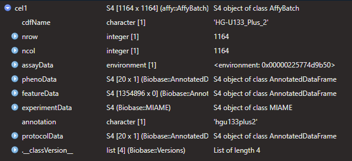
比如：head(cel1@assayData[["exprs"]])[,1:3]
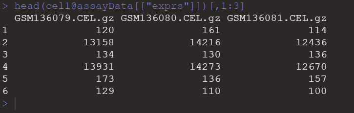
其实这个就是我们的表达数据了，列名数文件名，具体信息可以通过前面整理的Targets文件来识别。
下面是通过ReadAffy()函数来读入，这个函数读入需要Targets文件信息。Targets这个数据框的行名最后是获取矩阵的列名，所以可以把Targets这个数据框的行名设置成对应的样本名称。
Targets <- read.table("geodata/GSE5823/Targets.txt",header = T,sep = "\t")
rownames(Targets) <- Targets$sampleName
cel2 <- ReadAffy(filenames = Targets$fileName,
celfile.path = "geodata/GSE5823/GSE5823_RAW",
phenoData = Targets)
# 表达矩阵 exprs
head(exprs(cel1))[, 1:5]
head(exprs(cel2))[, 1:5]
affexp <- exprs(cel2)
得到的cel2对象和cel1是一样的。可以像前面一样通过索引的方式提取矩阵，但我们有现成的轮子，可以直接通过exprs()函数直接提取出来。
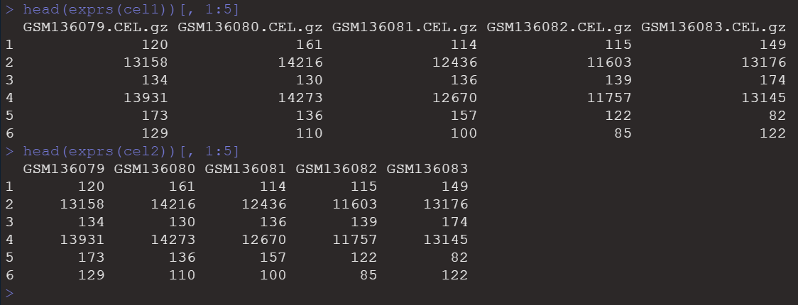
我们可以看到2个函数提取的数据是一样的。就是列名有点不同，有Targets文件的话，用ReadAffy()函数会好一些。样本数少，read.affybatch()函数可能会更加方便。
得到的数据可以保存为R对象：
4). 数据质量评估¶
芯片数据的获取经历多个步骤，每个环节都有可能出现问题:
- ① 样本收集：准备细胞、组织、动物样本；样本的储存
- ② RNA提取：DNA污染？ RNA降解？
- ③ 荧光标记/探针杂交：RNA反转录、标记、杂交、清洗
- ④ 图像扫描：信号的检测、转换、数据存储
- ⑤ 从图像提取信号值：匹配坐标与探针、提取前景和背景信号值
质量评估是芯片数据分析过程中不可缺少的步骤 ：单个芯片的水平（array level） ；整个实验设计分组的水平（experimental level）；针对芯片原始数据（raw data）的评估；针对标准化处理后的数据（normalized data）的评估。
Affymetrix芯片数据质量评估的R包有： affy, affyPLM, simpleaffy, arrayQualityMetrics
下面我们加载前面处理得到的数据。
#### 加载Affymetrix芯片GSE5823数据 ----
load("geodata/GSE5823/GSE5823_data.Rdata")#变量名GSE5823_data
library(affy)
GSE5823_exp <- exprs(GSE5823_data)#提取表达矩阵
head(GSE5823_exp)[, 1:5]
GSE5823_targets <- pData(GSE5823_data) #就是前面Targets的信息，在phenoData中的data
查看数据。
### 查看数据----
affy::pm(GSE5823_data)[1:5, 1:5]# perfect matches
affy::mm(GSE5823_data)[1:5, 1:5]# mismatches 这是一个背景数据，没有完全匹配的数据
GSE5823_exp[1:5, 1:5]
affy::pm(GSE5823_data)[1, 1:5]#369707这是id号
GSE5823_exp["369707", 1:5]#定位到369707这一行，发现两者是一致的
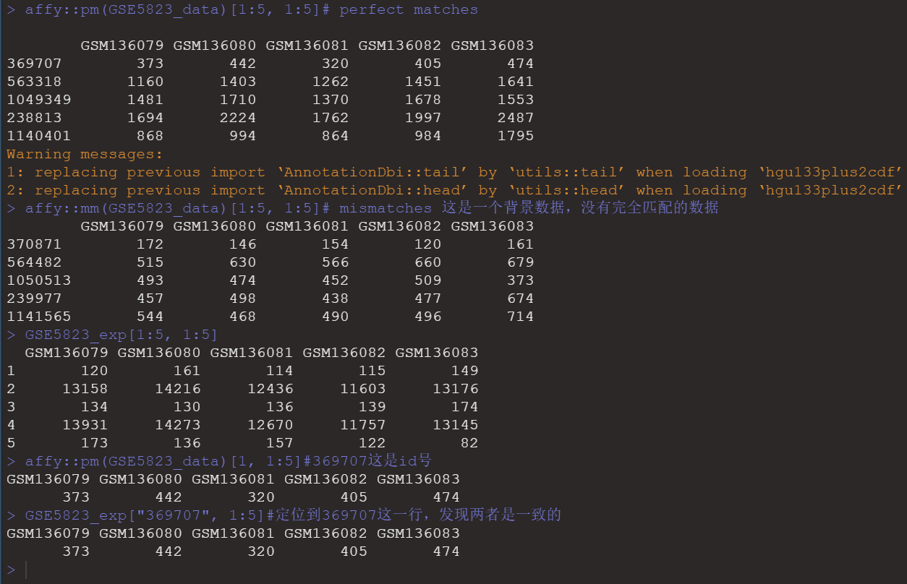
查看某一探针集的表达情况。
## 查看某个探针集的表达情况
library(tidyverse)#%>% 管道符就是tidyverse里的
GSE5823_pm_1007 <- affy::pm(GSE5823_data, "1007_s_at") %>%
as.data.frame() %>%
rownames_to_column("probe_id") %>%
pivot_longer(cols = starts_with("GSM"),
names_to = "sampleName",
values_to = "pm_value") %>%
left_join(GSE5823_targets %>% dplyr::select(sampleName, group),
by = "sampleName") %>%
mutate(probe_id = factor(probe_id, levels = c(paste0("1007_s_at", 1:16))))
ggplot(GSE5823_pm_1007, aes(x = probe_id, y = pm_value, col = group)) +
geom_point() +
labs(x = "Probe set 1007_s_at", y = "Intensity of PM values") +
theme(axis.text.x = element_text(angle = 90, vjust = 0.5))
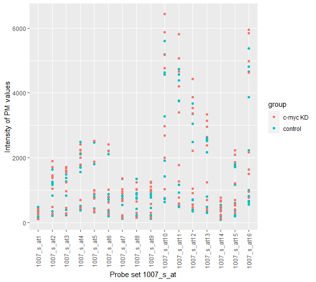
我们可以将数据转换为图片信息。
image(GSE5823_data[, 1], main = GSE5823_targets$sampleName[1])
image(GSE5823_data[, 2], main = GSE5823_targets$sampleName[2])
image(GSE5823_data[, 6], main = GSE5823_targets$sampleName[6])
dir.create("geodata/GSE5823/GSE5823_plots/")
for (i in 1:20) {
tiff(filename = paste0("geodata/GSE5823/GSE5823_plots/",
GSE5823_targets$sampleName[i], "_", i,".tif"),
height = 10,
width = 10,
units = "in",
res = 300)
image(GSE5823_data[, i], main = GSE5823_targets$sampleName[i])
dev.off()
}
可以根据图片的亮点分布是否均匀看数据质量好坏。
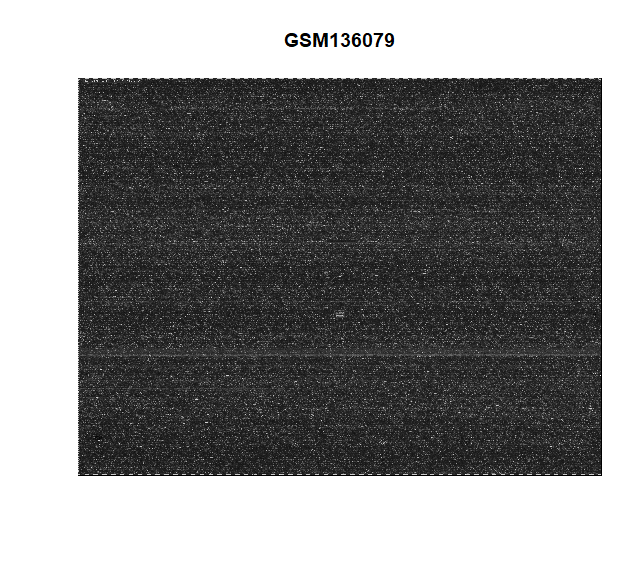
我们可以查看芯片的扫描时间。这个日期可作为一种重要的批次效应因素。
GSE5823_targets$batch <- GSE5823_data@protocolData@data$ScanDate %>%
str_sub(1, 8)#提取时间日期(年月日)，去掉具体详细的时间点。GSE5823_targets$batch
table(GSE5823_targets$batch)
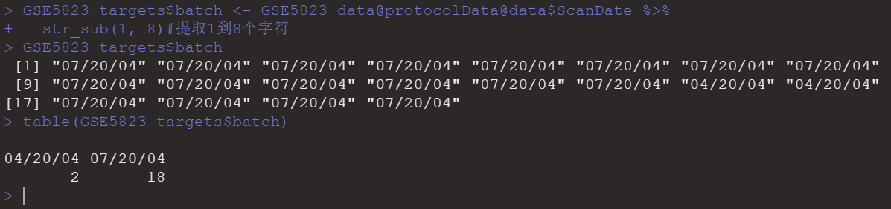
20个样本分了2批，还是有明显的批次效应的，但也不是说同一个数据集中就有问题。需要根据实验信息判断。比如我们这里的数据集中，是不同细胞control组和c-myc敲低组的芯片数据，如果每种细胞类型是通一批次的，不影响，因为我们分析的时候是按同一细胞类型去分析，但如果同一实验设计中，不同批次，那我们需要注意。这个数据会带来批次效应。
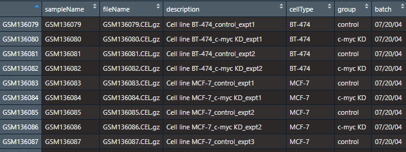
评估RNA的讲解程度：RNA降解从5‘端开始降解，所5'信号值要比3'信号值低一些，所以假如低得多了，斜率就大了，说明降解得很厉害。可以可视化查看：
cols <- rainbow(nrow(GSE5823_targets))
plotAffyRNAdeg(RNAdeg, cols = cols)
legend("bottomright",
ncol = 2,
legend = sampleNames(GSE5823_data),
lty = 1,
lwd = 2,
cex = 0.8,
box.lty=0,
bg = "transparent",
col = cols)
box()
simpleaffy包的质量评估函数qc()函数可以查看数据的质量。
这里的 P/M/A 分别代表 present/ marginal present/ absent
绘制箱型图，颜色是根据不同细胞类型设定。
#箱线图
library(RColorBrewer)
display.brewer.all()
col <- brewer.pal(4, "Set2")
cols <- c(rep(col[1],4), rep(col[2],6),rep(col[3],4),rep(col[4],6))
boxplot(GSE5823_data, las = 2,
col = cols )
我们发现同一实验设计中，数据直接还是有差异的。
绘制密度分布图查看一下表达值的分布情况。
#密度图
hist(GSE5823_data, lty = 1:3, col = cols)
legend(x=12,
y=0.85,
legend = sampleNames(GSE5823_data),
lty = 1:3,
cex = 0.8,
col = cols,
box.col = "transparent",
xpd = TRUE)
box()
看见表达值的分布有的高有的低，整体来看的话说明是有问题的。
Deseq2包的的PCA函数进行主成分分析查看一下数据的分类情况。我这里的数据集有不同的细胞，所以我按照细胞类型来看。
#参考了Deseq2包来写的PCA函数
PCA_new <- function(expr, ntop = 500, group, show_name = F){
library(ggplot2)
library(ggrepel)
rv <- genefilter::rowVars(expr)
select <- order(rv, decreasing = TRUE)[seq_len(min(ntop, length(rv)))]
pca <- prcomp(t(expr[select, ]))#最核心的代码
percentVar <- pca$sdev^2/sum(pca$sdev^2)
d <- data.frame(PC1 = pca$x[, 1],
PC2 = pca$x[, 2],
group = group,
name = colnames(expr))
attr(d, "percentVar") <- percentVar[1:2]
if (show_name) {
ggplot(data = d, aes_string(x = "PC1", y = "PC2", color = "group")) +
geom_point(size = 2) +
xlab(paste0("PC1: ", round(percentVar[1] * 100), "% variance")) +
ylab(paste0("PC2: ", round(percentVar[2] * 100), "% variance")) +
geom_text_repel(aes(label = name),
size = 3,
segment.color = "black",
show.legend = FALSE )
} else {
ggplot(data = d, aes_string(x = "PC1", y = "PC2",color = "group")) +
geom_point(size = 2) +
xlab(paste0("PC1: ", round(percentVar[1] * 100), "% variance")) +
ylab(paste0("PC2: ", round(percentVar[2] * 100), "% variance"))
}
}
PCA_new(log2(GSE5823_exp),
nrow(GSE5823_exp),
group = GSE5823_targets$cellType,
show_name = T)
但我们做评估的话，这样慢慢看效率是很低下的，有专门的函数生成数据的评估报告。arrayQualityMetrics包就可以用来评估数据，会在设定的文件加下生成很多文件，可以打开index.html网页文件打开查看。
library(arrayQualityMetrics)
dir.create("geodata/GSE5823/GSE5823_QC_raw")
arrayQualityMetrics(GSE5823_data,
outdir = "geodata/GSE5823/GSE5823_QC_raw", #通过该文件夹下的index来看结果
force = TRUE,#如果本身有个文件夹的话就把文件夹刷新了
intgroup = "group",#GSE5823_data@phenoData@data[["group"]]
do.logtransform = TRUE)
dev.off()
打开index.html网页文件。网页顶部有报告的目录信息，分为5部分。我们可以慢慢的查看。
可以根据下面这个图来确认数据的好坏，有×的点，代表该数据样本在对应的方法检测下是不合格的数据。如果数据样本多，可以去除不合格的样本，数据样本少的时候没法，但如果一个样本6种检测方法中有3个即以上都不通过，说明数据是有问题的。当然，有的作者也使用。
这6种方法对应的可视化图片在网页下面可以查看。
5). 数据的背景校正¶
Affymerix芯片背景校正的主要R包：从CEL文件读取后的数据出发，可使用affy包及oligo包中的相应函数处理。
Affymetrix芯片原始数据的背景校正可以用affy包中的bg.correct()函数。该函数提供5种计算方法，最常用rma方法。可以通过bgcorrect.methods()查看这5种方法。这里不需要了解各种算法，就用rma方法就行了。
library(RColorBrewer)
display.brewer.all()
col <- brewer.pal(4, "Set2")
cols <- c(rep(col[1],4), rep(col[2],6),rep(col[3],4),rep(col[4],6))
bgcorrect.methods()
GSE5823_bgc <- affy::bg.correct(GSE5823_data, method = "rma")#最常用rma方法
#背景矫正后作图
boxplot(GSE5823_bgc, las = 2, col = cols)
可以比较一下，前面数据质量报告，GSM136093和GSM136094这2个样本在质量评估中6种检测方法是不合格的，这里背景校正后还是和另外4个是有偏离的，可以从前面的质控报告汇中看到，这2个样本的扫描时间和其他的不一样，这可能就是批次效应带来的误差所引起的。所以这2个数据是需要去除的。类似的还有GSM136084这个样本。
再做一个主成分分析看看。
PCA_new(log2(exprs(GSE5823_bgc)),
nrow(GSE5823_bgc),
group = GSE5823_targets$cellType,
show_name = T)
PCA_new(log2(exprs(GSE5823_bgc)),
nrow(GSE5823_bgc),
group = GSE5823_targets$group,
show_name = T)
从细胞类型来看的确分为了4个类别，这个和符合，本身就是不给不同的实验设计。但同一实验设计中就不是那么好了，只有MCF-7细胞这组的实验设计能很好的将control组和敲低组区分出来。
6). 芯片数据标准化¶
通过对芯片数据标准化可以弥补一部分系统偏差对数据的影响 ，使各个样本芯片数据的分布相似，使不同的芯片之间可以进行比较 。
芯片数据标准化方法类别：
- ① 基于所有基因的标准化，需要满足两个假设前提： 一是不同样本中的绝大部分基因表达是稳定不变的 ，二是上调和下调的基因数量是相似的，具有对称性。
- ② 基于管家基因的标准化 ：认为管家基因在不同的处理条件下均是恒定的
- ③ 基于芯片实验中设置的已知表达水平的对照基因
对于Affymerix芯片来说，rma或者gcrma已经把背景矫正整合进去了，所以没有必要单独做背景矫正。我们先来看rma方法。
GSE5823_rma <- affy::rma(GSE5823_data)#用的是原始cel数据，不是背景矫正后的数据
boxplot(GSE5823_rma, las = 2, col = cols)
这里需要注意，我这里的数据集里面有4个不同的实验设计，一起校正。我认为，真正分析的时候，将他们区分出来，分别校正，会好一些。
GSE5823_rma_BT474 <- affy::rma(GSE5823_data[,1:4])
boxplot(GSE5823_rma_BT474, las = 2,
col = rep(c("#66C2A5","#FC8D62"),2))
芯片数据标准化之后看数据质量是否改善。
arrayQualityMetrics(GSE5823_rma,
outdir = "affymetrix/GSE5823/GSE5823_QC_rma",
force = TRUE,
intgroup = "group",
do.logtransform = TRUE)
和前面一样，就不多说啦。
下面我们使用gcrma方法进行标准化
GSE5823_gcrma <- gcrma(GSE5823_data)
GSE5823_expr_gcrma <- exprs(GSE5823_gcrma)
boxplot(GSE5823_gcrma, las = 2, col = cols)
标准化后的数据和未标准化的数据是有很大区别的。
为标准化之前有135万行的数据，任何芯片都没有这么多探针的，我们标准化后就可以看见行名变成了探针名称，行数只有5万多。
我们在看，不同实验设计一起标准化合和分别标准化多多少少是有区别的。所以像本案例这类似的数据集，最好是分别标准化。
GSE5823_gcrma_BT474 <- gcrma(GSE5823_data[,1:4])
GSE5823_expr_gcrma_BT474 <- exprs(GSE5823_gcrma_BT474)
head(GSE5823_expr_gcrma)[,1:4]
head(GSE5823_expr_gcrma_BT474)[,1:4]
同样标准化后可以再检测一下数据质量。
arrayQualityMetrics(GSE5823_gcrma,
outdir = "affymetrix/GSE5823/GSE5823_QC_gcrma",
force = TRUE,
intgroup = "group",
do.logtransform = TRUE)
sampleInfo <- read.table("geodata/GSE5823/sampleInfo.txt",header = F,sep = "\t")
colnames(sampleInfo) <- c("sampleName","description")
celFileNames <- list.files("geodata/GSE5823/GSE5823_RAW",pattern = ".CEL.gz$",full.names = F)
sampleName <- str_split(celFileNames, pattern = "[.]", simplify = T)[,1]
celFlieInfo <- data.frame(fileName = celFileNames,sampleName = sampleName)
celFlieInfo <- merge(celFlieInfo,sampleInfo,by = "sampleName")
celFlieInfo$cellType <- str_split(str_split(celFlieInfo$description, pattern = "\\s+", simplify = T)[,3],
pattern = "_", simplify = T)[,1]
celFlieInfo$group <- ifelse(grepl("control",celFlieInfo$description),"control","c-myc KD")
write.table(x = celFlieInfo,
file = "geodata/GSE5823/Targets.txt",
quote = F,
sep = "\t",
row.names = F)
7). 缺失值处理¶
我们标准化后可能有缺失值，缺失值主要来自原始图像信息处理过程 、数据后续处理、转换过程。如果有，那么我们需要处理这些缺失值。补充缺失值的方法有邻近平均值局部法和删除等。
在R中，impute包提供的impute.knn()函数来补充缺失值，该函数使用最近邻平均替换缺失值。我们这里模拟一下，缺失值处理。
library(impute)
na_test <- GSE5823_expr_gcrma
row_index <- sample(1:50000)[1:5]
col_index <- sample(1:20)[1:5]
na_test[row_index, col_index] <- NA#造出NA
sum(is.na(na_test))
na_knn <- impute.knn(na_test, maxp = 30000)#maxp默认的是1500，根据数据维度大小设置大些
sum(is.na(na_test))
#比较一下原始的和补充之后的数值
GSE5823_expr_gcrma[row_index, col_index]
na_knn$data[row_index, col_index]
我们发现部分探针填补后和原来的缺失值是和大的。你可以多运行几次看看。部分探针没有差别，但部分还是差别很大。如果缺失值不多，缺失值所在的行不是你要的探针（不是你研究的探针/基因），我个人觉得直接删除该行会好一些。
(3). Illumina芯片原始数据的下载与处理¶
1). 数据的下载¶
GEO数据库中，Illumina芯片原始数据下载后解压，哪怕同一芯片，里面的数据也有些不同，甚至有的有缺失，作者并没有上传，比如数据集GSE32873，下载后的原始数据里面只有探针的注释文件。
下面我们下载几个数据集来比较一下。
library(GEOquery)
##下载芯片原始数据
ifelse(!dir.exists("geodata"),dir.create("geodata"),message("文件夹已存在"))
getGEOSuppFiles("GSE32873", baseDir ="geodata", makeDirectory = T)
getGEOSuppFiles("GSE140882", baseDir ="geodata", makeDirectory = T)
getGEOSuppFiles("GSE59183", baseDir ="geodata", makeDirectory = T)
下载后得到的原始数据文件GSE***_RAW.tar。我们解压到GSE***_RAW文件夹下。你需要查看一下里面有没有注释信息的文件，下面是3个不同的数据集，它们使用的是同一芯片。解压后会有相同的GPL文件。我们还可以看到，除了这2个文件，其他的GSM开头的就是样本数据文件，但他们个格式有所不同。前面说过Illumina芯片数据分析的4个起点： ① Pixel-level,每个像素点对应一个数据， tif/tiff 格式； ② Bead-level,每个bead对应一个数据， 类似于affymetrix的单个probe数据， 具体数据包括txt/idat/Iocs/sdf/xml等多种格式； ③ Summary-level,每个bead type对应 —个数据，类似于affy的probe set数据， txt/CSV 格式； ④ 公共数据库存储的表达矩阵数据。这就看作者上传的是什么数据文件，通常都是 Bead-level的数据文件，所以会有txt/idat/Iocs/sdf/xml这样的数据格式文件，比如数据集GSE59183，而且该数据集还有tif格式的数据文件。但在GSE140882数据集中只有txt格式的Bead-level的数据。GSE32873数据集里面处理GPL文件外，就没有其他的，也就是说没有原始数据，所以该数据集你无法从原始数据开始分析，但作者提供了非标准化的表达矩阵文件。
再如GSE108369这个数据集，解压后是还是压缩包需要进一步再解压。
2). 数据的读入¶
关于 Illumina芯片原始数据读入使用什么R包在前面有介绍。数据的读入我们首先介绍beadarray包的readIllumina()函数。下面介绍readIllumina()函数。
readIllumina(dir = ".", useImages = FALSE,
illuminaAnnotation = NULL, sectionNames = NULL, metricsFile = "Metrics.txt",
forceIScan = FALSE, dec = ".", sampleSheet="sampleSheet.csv",...)
dir就是数据所在的路径。useImages指定是否通过图像数据读入，设置为TRUE时，前体是有tif/tiff格式的数据。数据集GSE140882中是没有的，所以处理该数据集时不能通过这种方式。但数据集GSE59183数据很全，是可以的，其实就是如果useImage设置为TRUE，则使用文本文件中提供的珠子中心坐标从TIFF图像中提取强度。对于其他格式文件信息如下：
- .txt文本文件：列出数组部分中每个解码珠的ID、坐标和强度。强度经过了局部背景校正。如果useImages = FALSE，这些强度将用作分析的起点。
- .sdf文件：Illumina的整个芯片或SAM的样本描述文件。这在beadarray中用于确定剖面的物理属性。
- .locs文件：数组中所有珠子的位置（即包括所有无法解码的珠子）
illuminaAnnotation参数：指定生成数据的Illumina平台的字符串。这是可选的，将有助于自动化对表达式数据的一些分析。目前这个参数的选择是Humanv4, Humanv3, Humanv2, Humanv1, Mousev2, Mousev1, mouse1p1, Ratv1。比如这里的芯片是Illumina HumanHT-12 V4.0 expression beadchip，对应的就是Humanv4。
读入数据集GSE140882的数据。
## 读取目录中的文件, bead-level
library(beadarray)
path1 <- "geodata/GSE140882/GSE140882_RAW/"
GSE140882_BLdata <- readIllumina(dir = path1)
##添加注释
annotation(GSE140882_BLdata) <- suggestAnnotation(GSE140882_BLdata)
## 查看数据
head(GSE140882_BLdata[[10]])
slotNames(GSE140882_BLdata)
str(GSE140882_BLdata)
dim(GSE140882_BLdata)
## 保存数据
save(GSE140882_BLdata,
file = "geodata/GSE140882/GSE140882_beadlevel1.Rda")
因为这个数据集只有txt文件，没有其他的格式文件，所以在Targets中相应的变量为NA，如果有，这些数据也会被读入进来。
取一个值看看，第一列是探针ID，第二列和第三列是坐标值，第四列是信号值，用来指示表达水平。
> head(GSE140882_BLdata[[10]])
ProbeID GrnX GrnY Grn
[1,] 10008 1266.670 14383.660 747
[2,] 10008 1816.482 2781.520 523
[3,] 10008 1944.487 3564.491 342
[4,] 10008 2116.688 1204.003 444
[5,] 10008 684.497 3372.999 639
[6,] 10008 1445.521 5622.521 554
dim函数查看数据维度，总共有27芯片，每个芯片有的Beads数也被列出来。
> dim(GSE140882_BLdata)
nArrays nBeads1 nBeads2 nBeads3 nBeads4 nBeads5 nBeads6 nBeads7 nBeads8 nBeads9 nBeads10
27 1049985 979585 1032451 999011 1020257 1017478 987157 975496 976775 976596
nBeads11 nBeads12 nBeads13 nBeads14 nBeads15 nBeads16 nBeads17 nBeads18 nBeads19 nBeads20 nBeads21
944583 953363 1029041 1043010 1095933 1040761 1086987 1097331 1093468 1117748 1112479
nBeads22 nBeads23 nBeads24 nBeads25 nBeads26 nBeads27
1115702 1126377 1120570 1120508 1125320 1122439
接下来，读入GSE59183数据集，通过设置useImages参数来确认是否从TIF图像中读入数据。
## 文件所在目录
path2 = "geodata/GSE59183/GSE59183_RAW"
## 读取目录中的文件, bead-level
library(beadarray)
data_ntiff <- readIllumina(dir = path2, useImages = F, dec = ".",
illuminaAnnotation = "Humanv4")
data_tiff <- readIllumina(path2, useImages = T, dec = ".",
illuminaAnnotation = "Humanv4")
head(data_ntiff[[1]])
head(data_tiff[[1]])
我们发现，useImages参数是否设置为TRUE，他们的信号强度值（Grn）不一样。GrnF是图片的前景值，GrnB是图片的背景值。前面介绍useImage设置为TRUE，则使用文本文件中提供的珠子中心坐标从TIFF图像中提取强度。前景值是从图像的锐化版本计算出来的。背景值计算为围绕珠心的17x17像素正方形中5个最低像素的中值。所以useImages参数是否设置为TRUE，导致计算的背景值方法不一样，所以Grn的值有区别，但整体的分析的差异应该是不大的。我们的原始数据中大多是没有tif格式的图像文件的，这种你就不用纠结要不是设置为TRUE，如果有，其实设置与否都行，我没有去比较这2者之间最后的差异。但我认为是没有太大差异的（我们验证过）。还要说一下Grn的值其实就是前景值（GrnF）减去背景值（GrnB）。背景值计算的算法参考文献如下：
- Kuhn K, Baker SC, Chudin E, Lieu MH, Oeser S, Bennett H, Rigault P, Barker D, McDaniel TK, Chee MS. A novel, high-performance random array platform for quantitative gene expression profiling. Genome Research. 2004;14(11):2347-2356
- Smith ML, Dunning MJ, Tavare S, Lynch AG. Identification and correction of previously unreported spatial phenomena using raw Illumina BeadArray data. BMC Bioinformatics. 2010;11:208
下面介绍一下计算过程。
首先我们需要读入tif文件。用readTIFF()函数读入，该函数一次只能读入一个文件。可以用lapply()函数遍历读入。
### read TIFF
tif_files_path <- list.files("geodata/GSE59183/GSE59183_RAW/",
pattern = "tif$", full.names = T)
tif_data <- lapply(tif_files_path, function(p){readTIFF(p)})
我们去第一个图片信息查看一下
读入的图片数据是一个矩阵。
我们将前面读入的 data_ntiff数据赋值给一个新变量进行操作。getBeadData()函数获取芯片数据。array=1，表示第一个芯片，what是芯片数据的列名。下面是提取第一个芯片的坐标信息。
data <- data_ntiff
xcoords <- getBeadData(data, array = 1, what = "GrnX")
ycoords <- getBeadData(data, array = 1, what = "GrnY")
下面我们计算前面读入tif图片矩阵数据的背景值。有2个函数可以计算。medianBackground()函数和illuminaBackground()函数。2个函数计算结果差不多。
bg <- medianBackground(tif_data[[1]], cbind(xcoords, ycoords))
bg2 <- illuminaBackground(tif_data[[1]], cbind(xcoords, ycoords))
将计算的背景值添加到data中。what指定添加数据的列名
data <- insertBeadData(data, array = 1, what = "GrnRB", bg)
data <- insertBeadData(data, array = 1, what = "GrnRB2", bg2)
计算图形前景值，利用illuminaSharpen()函数先过滤一下数据，再用illuminaForeground()函数计算。backgroundCorrectSingleSection函数计算信号值（前景值-背景值=信号值）。
# apply Illumina's image filtering
Tif <- illuminaSharpen(tif_data[[1]])
fg <- illuminaForeground(Tif, cbind(xcoords, ycoords))
data <- insertBeadData(data, array = 1, what = "GrnF", fg)
##
data <- backgroundCorrectSingleSection(data, array = 1,
fg = "GrnF",
bg = "GrnRB",
newName = "GrnR")
head(data[[1]])
我们可以看到我们自己计算的信号值GrnR与前面直接读入数据Grn是差不多的。也就是说， 对于illumina数据而言，就不需要矫正背景数据了，就没有了背景矫正这个环节，在useImages参数设置为TRUE时，得到的数据已经进行了背景校正。
添加注释
suggestAnnotation(data_ntiff, verbose = T)
annotation(data) <- suggestAnnotation(data, verbose = TRUE)
查看数据结构
slotNames(data)
data@sectionData$Targets$greenImage
data@sectionData$Targets$textFile
head(data[[1]])
colnames(data[[1]])
sectionNames(data)
numBeads(data)
接着，我们读入idat的数据。使用readIdatFiles()函数读入数据。这里以这个数据集GSE113440为例
idat_dir <- "geodata/GSE113440/GSE113440_RAW"
idat_files <- list.files(idat_dir, pattern = ".idat$", full.names = T)
## 读取idat files
library(beadarray)
GSE113440_idat <- readIdatFiles(idatFiles = idat_files)
可以通过索引的方式提取原始数据的表达矩阵
## 原始表达矩阵数据
GSE113440_expr_idat <- GSE113440_idat@assayData$exprs
dim(GSE113440_expr_idat)
head(GSE113440_expr_idat)[,1:3]
保存数据用于后续的分析。
下面我们介绍如何使用lumi包读取illumina芯片数据。GSE108369这个数据集解压后需要处理一下，将所有GSM样本的txt文件放在同一目录下，方便后面处理。
虽然都是txt文件，用的芯片也是一样的，但这里面的数据有所区别，数据总共有6列。第一列就是探针，第二列是信号值的log值，第三列是原始的信号值，第5列是该探针的重复数（Beads数），第四列就是该探针在所有beads中信号值的标准差，第6列就是p值。
先整理一个target文件：
## 整理targets
library(tidyverse)
files
targets <- data.frame(FileName = files,
sample_id = str_match(files, "GSM\\d+")[, 1],
sample_name = str_match(files, "eum_(.*).txt")[, 2],
group = str_match(files, "eum_(.*)_")[, 2],
row.names = str_match(files, "GSM\\d+")[, 1],
stringsAsFactors = F)
我们去掉第二列的数据，其他列的列名"ProbeID", "AVG_SIGNAL","BEAD_STD",'Avg_NBEADS','DETECTION'都要加上样本ID，如下这种样子。
我们读入数据然后再重新命名列名后输出就可以啦。
dir.create("geodata/GSE108369/GSE108369_RAW_processed")
for (i in 1:length(files)) {
# read_tsv读入，dplyr::select选择第1列和第3到第6列
tmp <- readr::read_tsv(files[i]) %>% dplyr::select(1,3:6)
# 改列名
colnames(tmp) <- paste0(c("ProbeID", "AVG_SIGNAL","BEAD_STD",'Avg_NBEADS','DETECTION'),
"_", targets$sample_id[i])
# 写出
readr::write_tsv(tmp, path = paste0("geodata/GSE108369/GSE108369_RAW_processed/", basename(files[i])))
# write.table(tmp, file = basename(files[i]), sep = "\t", col.names = T,row.names = F, quote = F)
}
然后再读入重新命名列名的数据。
## 应用 lumi读取文件
library(lumi)
GSE108369_lumi <- lumiR.batch(fileList = paste0("geodata/GSE108369/GSE108369_RAW_processed/",
basename(files)),
detectionTh = 0.01,
sampleInfoFile = targets)
## exprssion matrix
GSE108369_expr_lumi <- exprs(GSE108369_lumi)
dim(GSE108369_expr_lumi)
sum(is.na(GSE108369_expr_lumi))#判断是否有缺失值，如果有的话就返回1，再计算总和就可以知道有几个缺失值
## save data
save(GSE108369_lumi, GSE108369_expr_lumi,
file = "geodata/GSE108369/GSE108369_lumi.Rdata")
最后介绍一下limma包读入数据，limma包中read.ilmn函数适合读入下面这种类型的数据，下载后的原始数据只在一个文件中。
有一些是非标准化的数据。比如数据集GSE42242。
preview <- read_tsv("geodata/GSE42242/GSE42242_non-normalized.txt")
colnames(preview)
GSE42242_non_norm <- read.ilmn(files = "geodata/GSE42242/GSE42242_non-normalized.txt",
expr = "SAMPLE",#这里要根据数据实际的样子来改，有时候又变成了sample全
other.columns = "Detection",
probeid = "ID_REF")
head(GSE42242_non_norm$E)
dim(GSE42242_non_norm$E)
## save data
save(GSE42242_non_norm, file = "geodata/GSE42242/GSE42242_non-normalized.Rdata")
但是有的不规则的，我们要重新改一下列名。比如GSE32873这个数据集。
preview <- read_tsv("geodata/GSE32873/GSE32873_non_normalized.txt")
colnames(preview)
colnames(preview) <- c("ID_REF",
"AllStar_control_1","Detection.Pval",
"AllStar_control_2","Detection.Pval",
"AllStar_control_3","Detection.Pval",
"AllStar_UBE2C_1","Detection.Pval",
"AllStar_UBE2C_2","Detection.Pval",
"AllStar_UBE2C_3","Detection.Pval",
"AllStar_MELK_1" ,"Detection.Pval",
"AllStar_MELK_2" ,"Detection.Pval" ,
"AllStar_MELK_3" ,"Detection.Pval"
)
write.table(preview,file = "geodata/GSE32873/GSE32873_non_normalized_new.txt",
sep = "\t",row.names = F,quote = F)
GSE32873_non_norm <- read.ilmn(files = "geodata/GSE32873/GSE32873_non_normalized_new.txt",
expr = "AllStar_",#这里要根据数据实际的样子来改，有时候又变成了sample全
other.columns = "Detection",
probeid = "ID_REF")
head(GSE32873_non_norm$E)
dim(GSE32873_non_norm$E)
## save data
save(GSE42242_non_norm, file = "geodata/GSE32873/GSE32873_non-normalized.Rdata")
总结：我们解压后的数据文件，可以打开看一下，如果数据量很大，每个GSM整百万行的那种，一般都是bead-level的数据，用beadarray::readIllumina函数读取；对summary-level来说，如果是idat格式的，可以用 beadarray::readIdatFiles()来读取。看到数据有四列，"ProbeID", "AVG_SIGNAL", "BEAD_STD", 'Avg_NBEADS', 'DETECTION'，需要做转换，就是改个名字+GSM的ID，limma包读取一个列sample一列detection这种数据。
3). 数据的标准化¶
A.数据集GSE140882的标准化
前面下载数据和读入的代码：
library(beadarray)
library(tidyverse)
library(GEOquery)
##下载芯片原始数据
ifelse(!dir.exists("geodata"),dir.create("geodata"),message("文件夹已存在"))
getGEOSuppFiles("GSE140882", baseDir ="geodata", makeDirectory = T)
path <- "geodata/GSE140882/GSE140882_RAW/"
GSE140882_BLdata <- readIllumina(dir = path)
## add annotation
annotation(GSE140882_BLdata) <- suggestAnnotation(GSE140882_BLdata)
save(GSE140882_BLdata,
file = "geodata/GSE140882/GSE140882_beadlevel1.Rda")
加载前面处理的数据。提取targets仅仅是一部分信息，还需要自己整理。
load(file = "geodata/GSE140882/GSE140882_beadlevel1.Rda")
BLdata <- GSE140882_BLdata
rm(GSE140882_BLdata)
targets <- BLdata@sectionData$Targets#
(4). 下载SOFT格式的数据¶
gset <- getGEO(GEO = "GSE7765",AnnotGPL=F ,destdir = "./geodata")
exp <- exprs(gset[[1]])
head(exp[,1:4])
> head(exp[,1:4])
GSM188013 GSM188014 GSM188016 GSM188018
1007_s_at 15630.200 17048.800 13667.500 15138.800
1053_at 3614.400 3563.220 2604.650 1945.710
117_at 1032.670 1164.150 510.692 5061.200
121_at 5917.800 6826.670 4562.440 5870.130
1255_g_at 224.525 395.025 207.087 164.835
1294_at 799.786 839.787 592.434 593.632
更新: 2023-08-06 19:28:27 原文: https://www.yuque.com/doublehelix/bioinfonotes/vvaql6